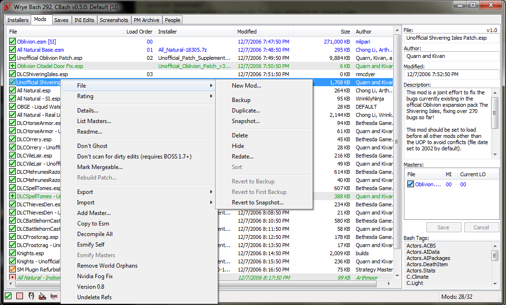
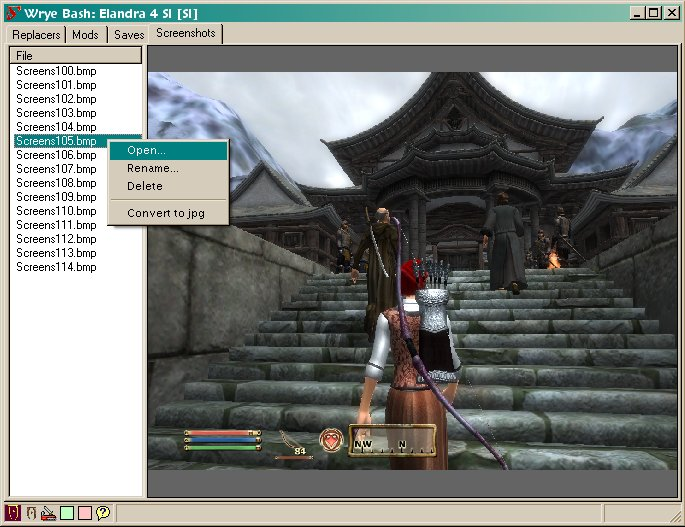

|
|
• Installation
• How To's and FAQs
• RELZ Topic
• Download:
• Wrye Musings
• TesNexus
• Change Log
• Installation
• Get and Install
• Windows Vista
• Starting Wrye Bash
• If Bash Won't Start
• Common Problems
• Python Components
• Help!
• Launch Buttons
• Application Buttons
• Bash Option Buttons
• Installers Tab
• Getting Started
• Overview
• Package Details
• Package Structure
• Skipped Files
• Doc File Sweeping
• Ordering
• Omod Conversion Data
• Bain Conversion Files
• Package Commands
• Package Header Commands
• Replacers Tab
• Textures BSA
• Mods Tab
• Mods List
• Mod Details
• Load Order
• Mods Tab Commands
• Auto-Ghost
• Load Lists
• Oblivion.ini
• INI Tweaks
• List Mods
• Debug Mode
• Mod File Commands
• File Commands
• Add Master
• Decompile All
• Copy to Esp/Esm
• Espify/Esmify Self
• Espify/Esmify Masters
• Import Face
• Import Formids
• Export/Import Editor Ids
• Export Factions
• Export/Import Groups
• Export/Import Item Data
• Export/Import Names
• Export/Import NPC Levels
• Export Relations
• Export/Import Prices
• Export/Import Stats
• Export/Import Scripts
• Export/Import Spell Stats
• Details
• List Masters (Mod)
• Mark Levelers
• Mark Mergeable
• Nvidia Fog Fix
• Rebuild Patch
• Remove World Orphans
• Undelete Refs
• Version 0.8
• Balo
• Full Balo
• Full Balo Usage
• Default Groups
• Semi-Balo
• Auto-Assigning Groups
• Bashed Patches
• Patch Usage
• Patch Notes
• Bash Tags
• Alias Mod Names
• Merge Patches
• Merge Filtering
• Item Interchange Mode
• Import Actors
• Import Cells
• Import Factions
• Import Graphics
• Import Names
• Import Inventory
• Import NPC Faces
• Import Relations
• Import Roads
• Import Scripts
• Import ScriptsContents
• Import Sound
• Import Stats
• Import Spell Stats
• Globals
• NPC Tweaker
• Tweak Assorted
• Tweak Clothes
• Tweak Names
• Tweak Settings
• Alchemical Catalogs
• Cobl Exhaustion
• Content Checker
• Leveled Lists
• Morph Factions
• Power Exhaustion
• Race Records
• SEWorld Tests
• Doc Browser
• Using the Doc Browser
• Wiki Text Format
• Notes
• Suggestions
• Mod Checker
• Generic Information
• Ruleset Information
• Only One Warnings
• Mod Group Info
• Mod Checker Options
• INI Tweaks Tab
• Saves Tab
• Saves List
• Backup Files
• Save Details
• Save Profiles
• Create/Edit Profiles
• Moving Savegames
• Save File Commands
• Load Masters
• List Masters (Save)
• Diff Masters
• Statistics
• .OBSE Statistics
• Delete Spells
• Import Face
• Import NPC Levels
• Rename Enchanted
• Rename Potions
• Rename Spells
• Reweigh Potions
• Update NPC Levels
• Remove Bloat
• Repair Abomb
• Repair Factions
• Repair Fbomb
• Repair Hair
• Face Import
• Import to Save
• Import to Mod
• Screenshots Tab
• Screenshots Commands
• Screenshot Commands
• PM Archive Tab
• Import Archives
• Searching PMs
• Other Notes
• People Tab
• General
• Add/Delete People
• Import People
• Export People
• Karma
• Oblivion.esm Swapping
• Swapping Setup
• Version Indicators
• Mod Tab Swapping
• Save Tab Swapping
• Extending
• Internationalization
• Versions
|
After you install Wrye Bash, you may find yourself a bit lost in the features. The rest of this manual describes the features in depth, but if you're looking to just do one or two things quickly, then you should consult the Wrye Bash Help Pages at UESP.
In particular, see:
• Wrye Bash Basic Usage for quick "how to" guides of most common bash uses.
• Wrye Bash Advanced FAQs: Oveviews of using advanced Bash features.
• At the top are the main tabs: Installers, Replacers (if enabled but superseded by Installers Tab), Mods, INI Tweaks Saves and Screenshots.
• The savegame list is the main feature of this Saves Tab. For each file, details are shown and general "health" of the savegame is indicated by the color of the savegame's checkbox. Purple is best – totally safe to play. Red is worst – meaning that one of the master mods files is missing.
• The file details for the currently selected savegame are shown to the right. File name, stats and savegame preview image are all shown.
• The masters list for the savegame is shown at the bottom of the details. The masters for the savegame are just the mods (esps and esms) that the savegame depends on.
• Most operations in Wrye Bash are accessed through context menus. In this case, I right clicked on a savegame, and so got the savegame menu. Here I'm selecting the Reweigh Potions command.
• Incidentally, you'll notice that the title of the window is "Wrye Bash: ELandra 4 SI [SI]". "ELandra 4 SI" is just the name of the currently selected savegame profile. The trailing [SI] indicates that I'm using the Shivering Isles (SI) version of Oblivion.esm.
• At the bottom is the launch bar, with buttons for launching Oblivion, OBMM, TESCS and options for launching OBSE and quitting Bash when launching Oblivion.

• Head Monkey
• Wrye: Monkey God of Modding!
• Assistant Monkeys
• Waruddar: Extensive additions/improvements/fixes.
• Ralgor: Cell support and Import Cells.
• Pacific Morrowind: New imports, exports, tweaks, etc.
• Raziel23x: new tweaks etc.
• Lojack: Wizard based install system, Ini tab etc.
• Haama: OBSE cofile definitions, various fixes, improvements etc
• Badhair: OBSE cofile reading code, various optimizations etc.
• Breeze582000: Bashmon
• Translators:
• German: DWS
• Italian: Abot
• Portuguese: Hadoki
• Russian: DJ_Kovrik
• Mod and Save File Gurus
• GhostWheel
• Dave Humphreys
• ElminsterEU
• Rick
• Resetgun
• ScripterRon
• Wrye
• Python Kings:
• Guido van Rossum and many, many others.
• Special Thanks:
• dev_akm: Archive Invalidation, etc.
• ElminsterEU: Tes4View etc. Crucial for adding/checking new record types.
• Quarn: BSA-Redirection, Black Screen Fix
• Timeslip: BSA editing code, OBMM integration, etc.
• Veritas_Secreto: Tamriel NPCs Revamped
• Additional Thanks
• ElminsterEU: Bug catching, technical suggestions.
• Metallicow: Shiny new tool launcher icons.
• Tom Suprgan: Several well researched suggestions.
• Sativarg: Proofreading
• Kmacg94: Additional power exhaustion coverage.
• To the testers/bug finders/helpful people on the forum when others have trouble (hopefully not missing too many people): Arthmoor, Corepc, Daemondarque, TommyH, Surazal, many others
• Misc. Resources
• FamFamFam icons
Aka, ideas/stuff I stole from other people.
• Names Files
• Flak: Flak's Complete Names Project
• Bash Features
• Kyorisu: Tes IV Save Manager (Save Profiles)
• No Light Flicker: Crypton's No Light Flicker mods
• GMST Tweaks
• Aelius: Arrow Litter, Essential NPC Unconsciousness
• David Moyer: PC Death Camera
• dbolivar, Acleacius: Horse Turning Speed
• demuerte: Chameleon: No Refraction
• Ravida: Fatigue from Running/Encumbrance
• timmypod: Unlimited Amulets and Rings
• Woodman: Chase Camera
• KseAli: POI Visibility
• Tom Supergan: Chase Camera Distance
• ??: Compass Disable
• ??: Compass: POI Recognition
• If you have a question/comment about Wrye Bash, it's best to post it on the current RELZ topic on the Bethesda Game Studios (BGS) forums.
• If you need to contact me personally, PM me at the BGS forums. However, if it's a general help question, I may ignore it, since such questions are better posted on the forum topic.
• If I'm not available (offline or working on other projects), then the Elder Scrolls forums are the best place to go for help with Wrye Bash.
Wrye Bash is released under Version 2 of the GNU General Public License. See enclosed gpl.txt file for license details.
|
• Download and run Wrye Python
• Select all components, then select the temporary install directory and click "Install". Upon doing so, installers for selected components will be unzipped and run in sequence. It's best to accept the default settings for each installer.
• Note: This is not part of Wrye Bash itself – rather it is a bundled installation of python and related libraries that Wrye Bash is built on top of. You should only need to install this once. For more infos, se Python Components.
• Download and Unzip Wrye Bash XXX.zip
• Unzip the files into your Oblivion installation directory. If you've done this correctly, you'll find bash.py and other bash files under Oblivion\Mopy.
• Note: This is the actual Wrye Bash code/application. It updates fairly frequently, but is small and easy to install.
• Upgrading
• If you're upgrading from an older version of Wrye bash, then just get the last Wrye Bash XXX.Zip file from Wrye Musings and unzip to Oblivion directory. There's no need to remove anything or reinstall any python components.
• Advanced:
• You can place the "\Mopy\" folders outside of the Oblivion directory, but you'll need to set the OblivionPath.
• This will probably only be useful for Bash developers (latest stable release in Oblivion directory + development version outside = my life is easier).
• May also be useful for running Bash from a flash drive (!!! WILD SPECULATION !!!).
• Remember when upgrading to install the "Data" folder to "\Oblivion\" and the "Mopy" folder to wherever you have it now
• On Windows Vista, the UAC (User Account Control) protects the Program Files directory (usually c:\Program Files) against write by regular users. This can be a problem for Bash and other mod editing and management tools (TESCS, TES4View, OBMM).
• Best Solution: Install Oblivion to somewhere other than under the Program Files directory. (E.g, install to c:\Games\Oblivion). Such an alternate directory is not subject to UAC control and won't have the same access and virtualization problems that the default install will have.
• Alternate Solutions: Alternatively, you might always run as admin, or turn off UAC – but both of those approaches are ill-advised. For more advice, see the Unofficial Help page at UESP.
• Double click the "Wrye Bash Launcher.pyw" file.
• Launching from another location:
• You can drag "Wrye Bash Launcher" to your Quick Launch toolbar. OR...
• In Explorer, copy "Wrye Bash Launcher", then go to the other location and use "Paste Shortcut".
• Advanced: You can place the "\Mopy\" folders outside of the Oblivion directory, but you'll need to set the OblivionPath through "bash.ini" or the -o argument.
• bash.ini:
• See "bash_default.ini" for full instructions - look for sOblivionPath under General.
• -o Argument:
• Type: "Wrye Bash Launcher.pyw" -o "C:\\Games\\Oblivion\\"
• Note that Python treats the back-slash \ as an escape character... even from the command prompt.
• If Bash refuses to start, or quits after quickly flashing up a window...
• Most likely there is a problem with your setup. Alternatively there may be a bug with Bash.
• You can usually figure out the problem by getting the bug dump and reviewing it. And if you can't puzzle it out, someone on the Elder Scrolls forums may be able to help.
• Finding the Bugdump
• Sometimes the error will be written to a file in the Mopy directory called bash.log. If that file is there, then that's the bug dump. You can open it with any text editor.
• If it's not present, then you'll have to generate the bug dump yourself...
• Generating the Bugdump
• Open a command shell (Start: Programs: Accessories: Command Prompt).
• chdir to the Mopy directory. "chdir" means "change directory". E.g.: chdir C:\Program Files\Bethesda Softworks\Oblivion\Mopy
• Type: c:\python25\python.exe bash.py -d
• If you have a different version/location of python, adapt the first
argument accordingly.
• Doing this will cause any error messages that Bash generates on start to spew to the command shell. This is the bugdump.
• Dealing with Bugdump
• First, look at it! – especially the last several lines – this will often give you a good clue as to what the problem is, and you may be able to resolve it on your own.
• Second, see following section for common problems and their solution.
• Can't find bash.py
• Make sure that you chdir to the Mopy directory first.
• Can't Find User Directory
• The problem here is that python is not very good at getting the user directories. There are two options here.
• This used to be semi-common problem but should be an issue for users who have pywin32 installed. (PyWin32 is included in the Wrye Python installer.)
• Can't Find wxversion
• I don't understand the source of the problem, but it has something to do with the way python is installed. The solution seems to be to reinstall python and wxpython in that order. (You may have to first uninstall both of them.)
• no module named wx
• You haven't installed wxPython or you haven't installed it in the right place.
• Be sure that you actually installed (not just downloaded) wxPython.
• If, when installing wxPython, you did not see the usual installation wizard dialog, then you almost certainly downloaded a corrupted version of wxPython. Re-download it. Make sure that the downloaded file is larger than a few kB (actually, it should be about 8 Mb).
• The NTVDM CPU has encountered an illegal instruction.
• If an error message like this pops up (very rare) the problem is with your OS installation. For some reason the Microsoft utility that handles the installation of installer files is messed up. As far as I know, the only solution is to fix (maybe reinstall) your OS (the utility is part of the Windows OS).
• UNCommon Problems
• If the problem is not listed above and thinking about it doesn't help, then go to the forums and post the whole bugdump. Preferably, you should post the dump in the Relz/Help topic (see Discussion link at top of page) or you can start a new topic. Be sure to mention "Wrye Bash" in the text of the post.
• Hint: Control-C does not work in the command line window, but you can still copy text from it by:
• Right click and select "Select All" to selecting the text,
• Hitting the Enter key.
• If you're having difficulty getting or installing Wrye Python or if you prefer to do things by hand, then here's some additional info on the python components it installs.
• Components:
• Python 2.5
• This is the main install for python. It provides the base interpreter/compiler and the basic libraries. Python 2.5 is the preferred version for Wrye Bash.
• Download link: Python 2.5.2
• wxPython 2.8.7.1 ANSI
• Python supports several different GUI libraries. Wrye Bash uses wxPython. Note that it's important to get version 2.8.7.1 – later versions of wxPython 2.8 are not compatible with Psyco.
• Download link: wxPython 2.8.7.1 ANSI for python 2.5.
• pyWin32
• PyWin32 provices access to windows registry info on user folders, etc. Wrye Bash uses this info to locate user specific info (active plugins and save games folder).
• Download link: SourceForge pywin32. Be sure to install the version that matches the version of python you installed! E.g. if you installed python 2.5, then download/install pywinXXX-py2.5.exe.
• ComTypes 0.5.2
• ComTypes is not strictly required, but may be used by later versions of Wrye Bash. (It's useful for copying screenshots to the desktop, etc.)
• PIL 1.1.6
• PIL (Python Imaging Library) is currently required, but may be used by later versions of Wrye Bash. (It's useful for manipulating screenshots, etc.)
• Psyco 1.6
• Psyco provides a peformance boost for python programs (at the cost of using more memory). Psyco is not required by Wrye Bash, but will be used if it is present. The performance boost can be useful if you frequently rebuild the Bashed Patch.
• Download link: Psyco 1.6-py25.exe.
• Wrye Python Debris
• Wrye Python does not have an uninstall feature. Instead, run install for separate components. If you're uninstalling everything, then uninstall python last.
• After running Wrye Python, you'll be left with separate installer files for each of the components. You can discard or keep these as you prefer.
• Alternate Python Installations
• Alternate python installations might work, however no guarantee is made. Currently (and for foreseeable future), python 2.5, wxPython 2.8.7.1, etc. are the preferred versions.
• Startup Problems: See If Bash Won't Start.
• Windows Are Off Screen:
• This may happen if you reduce your screen size or remove a second screen. Symptoms are that window shows up in taskbar, but doesn't appear. Also, you can use the taskbar to maximize the window, but once minimized it disappears again.
• As of v190, Bash's main window should autocorrect to be displayed when you start Bash.
• For other windows, see this tip.
• Other Tips/Help:
• First, Read this readme! Helps to use the search feature of your browser.
• Second, visit How To's and FAQs.
At the bottom left of Bash's main window you'll find launch buttons for Oblivion and other applications (if they're installed). You'll also find one or two toggle buttons.
• Overview:
• Each of the application buttons will be present if the corresponding application is present in the Oblivion install directory or in the directory specified in the bash.ini.
• You can also control if some of them show up or not through the bash.ini - by settings the sections for Modeling or texturing or audio tools to 0.
• Tes4Gecko & Oblivon Book Creater will be available if the javaw.exe is present in Windows\System32 and their .jar file is present in Oblivion install directory or for OBC in the data directory.
• Tes4Edit, Tes4Trans and Tes4view are just different modes of Tes4Edit.exe and will be available if Tes4Edit.exe is available.
• You can also control if some of the modes show up or not through the bash.ini - by setting bShowTes4... under [Tool Options]
• Running BOSS through here will automatically deghost and reghost your mods if you use ghosting. While doing so it may appear to stall but it hasn't.
• Applications:
• Oblivion (Main Oblivion executable, not the launcher.)
• Oblivion Mod Manager
• Oblivion Book Creator
• TES Construction Set
• Insanity Sorrow's Oblivion Launcher
• Insanity Sorrow's Readme Generator
• Insanity Sorrow's Random Name Generator
• Insanity Sorrow's Random NPC Generator
• Tes4Gecko
• Tes4View
• Tes4Edit
• Tes4Trans
• BOSS
• Tes4LodGen
• Tes4Files
• BSA Commander
• Interactive Map of Cyrodiil and Shivering Isles
• Oblivion Mod List Generator
• Oblivion Face Exchange Lite
• AutoCad
• Blender
• Dogwaffle
• GMax
• Maya
• Max
• MilkShape 3D
• Wings3D
• AniFX
• Artweaver
• Art of Illusion
• DDSConverter
• Genetica
• Genetica Viewer
• GIMP
• Gimp Shop
• IcoFX
• Inkscape
• Irfan View
• Paint.NET
• Photoshop
• Pixel Studio Pro
• Twisted Brush
• Audacity
• ABC Amber Audio Converter
• Fraps
• Media Monkey
• Notepad++
• WinMerge
• Logitech G11 Keyboard Profiler
• 18 Custom buttons
• These buttons can be set to any executable (.exe), Java (.jar), or double-clickable file (as in Explorer).
• You can also set the arguments for any type of Custom button - see ini for full instructions.
• OBSE
• When checked this will launch OBSE when either the Oblivion or TESCS buttons are clicked.
• Auto-Quit
• If checked this will cause Bash to quit when launching Oblivion. This is useful if you're concerned about memory usage.
• BashMon
• This launches bashmon.py in a command shell window. This is for use with Breeze582000's Seducers/Succubi mod and Wrye's Morph mod.
• For more info, see [WIPZ] Succubi Race.
• Help
• Show this help file in the default web browser.
• Doc Browser
• Show the Doc Browser. (You can also view the doc browser by double clicking on any mod file in the Mods tab.)
• Mod Checker
• Show the Mod Checker.
The Installers tab provides a mod package installer facility. In general purpose, it's much like TimeSlip's OBMM tool, however implementation is somewhat different from OBMM. Relative to OBMM, there are several substantial improvements; however in other ways, it is simpler and less powerful than OBMM. (Notably, there is no BSA archive handling in Bain.)
Here's a brief getting started guide. You may have to read sections further down before this section makes full sense.
• Terminology: Package
• A "package" is a collection of esps, esms and/or resource files. Everything listed under the Installers tab is a package. Packages can be either archive files in (zip, 7z or rar format) or directories (aka Projects).
• Terminology: Bain Conversion File
• A "Bain Conversion File" or "BCF" is a special archive that tells Bash how to convert a standard archive into a Bain-ready archive. It also contains any new files that weren't present in the original archive. BCF's allow mod users to easily share their custom Bain compilations.
• Initialization
• When you first visit the Installers tab after starting Bash, Bain will need to go through an initialization process. If you've done this before, and no new packages are installed, and the machine is "warm", then it will take on the order of ten seconds.
• However, if you have just added a bunch of packages, then Bain will take longer to intitialize, since it will need to scan all new/modified packages.
• In particular, the first time you start Bain, it will take a long time (on the order of five to fifteen minutes) to initialize. Enjoy your coffee break. :D
• If Bain is disabled (which you may have done by answering 'No' on the first time visit to the Bain tab), you can re-enable it by right clicking on the column tab and choosing 'Enable'.
• Reducing Init Times
• You can disable Bain entirely by unchecking "Enabled" in the column context menu on the Installers tab. (Note that this does not erase previously stored info. I.e. it's safe to disable Bain and then later re-enable it if you prefer.)
• You can choose to "Avoid on Startup" (again from column context menu). This will cause Bash to try to avoid the Installers tab when it starts up. And since Bain won't initialize until you visit the Installers tab, you'll save a bit of time if you weren't planning on visiting it anyway.
• Install Directory
• As noted below, Bain looks for packages in the Oblivion Mods\Bash Installers directory. Easiest way to get started with Bain is to just grab all your old mod archives and move them to the Installers directory. Then return to the Installers directory to see Bain's evaluation.
• If you're a modder with existing project directories, you can move those to the Installers directory too.
• Reviewing Package Status
• Some packages may be green, but most (even ones that you have previously installed) will likely be red. (Even if you have installed a package, Bain's Doc File Sweeping means that some files will be in unexpected places.
• For each package, you can select it, and then review its details in the Debug text box. In particular, look for Missing and Overridden files.
• You can intall package as desired (though you may want to change their order first.)
• For complex packages, you will likely want to configure their sub-packages before activating them.
• For packages with unrecognized structure (grey checkbox and name), you'll need to restructure the package's directories and files to something more like what Bain expects before you can install them.
Bain will search for and display packages from the (new) Oblivion Mods\Bash Installers directory. Mods (either archives or projects) can then be installed or uninstalled, and their status can be reviewed in the details pane on the right.
• Checkmarks
• Installed packages will be marked with a "+".
• Icon Colors
Icon colors indicate the degree to which the package is synchronized with the Oblivion\Data directory:
• Green: Package is fully synced. Note that a package can be green even if it is not "Active". E.g. if you have two identical packages and one is (fully) installed, then it will be green and checked. But the identical package will also be green – since it too is fully synced with the data directory.
• Red: Some files in the package are missing from the data directory.
• Orange: All package files are present in the data directory, but some esps/esms are not identical. (E.g. another package installed an alternative version of that file, or the user modified the file after installation.)
• Yellow: All package files are present in the data directory, but some resource files are not identical. (E.g. another package installed an alternative version of that file, or the user modified the file after installation.)
• White: This is relatively rare. It just means that the package is configured in a way that it has no files to install. This can happen for complex packages where none of the sub-packages are checked.
• Grey: This indicates that the package has a structure that Bain does not recognize, and so cannot install.
• Red X: The package is corrupt and/or incomplete. You'll likely see this for packages that you are currently downloading into the Installers directory.
• Icon Shape
• Diamond: A project, i.e. a subdirectory in the Installers directory.
• Square: A mod package archive. Note that only rar, 7z and zip formats are supported.
• Text Colors
• Navy Blue: Indicates a package with sub-packages. The files to be installed, and thus the install state of the package will depend on which sub-packages you have activated.
• Grey: This indicates that the package has a structure that Bain does not recognize, and so, cannot install.
• Text Background
• Orange: Indicates that the install is dirty. This will occur for packages for which the configuration has been altered (either by altering active sub-packages and esmps, or by altering the package itself). This can be repaired by running Anneal or Anneal All.
• Yellow: Indicates that the package has "underrides" i.e. some of its installed files should be overridden by higher order packages. This may happen after reordering mods that have already been installed. It can be repaired by running Anneal or Anneal All.
• Grey: Indicates that some files present in the package will not be installed. This is usually due to a complex structure that is only partially handled by Bain, but can also be due to having files that Bain refuses to install (exe's, dlls, sub-archives, etc.)
Details for the currently selected package will be show on the right. There are (currently) three fields here:
• Info Tabs
The tabs at the top display several types of information relevant to the current mod. Note that much of this information is dependent on the install status of the mod and sometimes it's order.
• General: Shows summary info and the files to be installed – as determined by sub-package, esp/m, voice filtering, etc.
• Matched: Shows files which are identical to current data directory files.
• Missing: Files which are missing from the data directory.
• Mismatched: Files which are present in the data directory, but which aren't identical to the package's version of those files.
• Conflicts: Shows which other packages will conflict the current package and for what files. Note that if a given file is mismatched, but the mismatch isn't due to other packages, then it won't appear. This report can be modified to show inactive conflicts and/or lower order conflicts through Package Header Commands.
• Underridden: Shows packages which should be overridden, but are not, due to install order errors. This can be corrected by running Anneal or Anneal All.
• Dirty: Shows files which the package previously installed, but which now should be removed or altered due to a reconfiguration of the package. Dirty files can be cleared by running Anneal or Anneal All.
• Skipped: Shows which files in the package were skipped by Bain.
• Sub-Packages
This will be blank unless the package has sub-packages. You can determine which of these to install simply by checking the ones you want. Note that sub-packages are installed in the order they appear. So if different subinstallers have different versions of the same file, then the subinstaller that is later in the list (and active) will win.
• Esp/m Filtering
This tab can be used to filter out specific esps and esms from a packages. This is intended for use with packages that provide alternate and optional mods. Note that Esp/m filtering is applied after sub-package filtering. E.g. it may be easier to turn off a sub-package entirely rather than disable individual espms from it.
• Comments
This is a field where you can enter comments about the package. Useful for keeping track of what the package is supposed to do, etc.
Bain recognizes three package structures:
• Simple
• If the package has esps, esms or bsa's at the top level, or if it has any of the regular Oblivion\Data subdirectories (e.g. Meshes, Textures) at that level, then it will be categorized as a simple package.
• Complex
• If a package is not simple, but has subdirectories which appear simple (have esps/esms/bsas and/or have standard sub-directories), then it will be categorized as complex.
• In this case, each top level subdirectory (that appears simple), will be treated as a sub-package, and you'll be able to activate or deactivate it as desired before installing.
• Complex/Simple
• If a package is complex, but has only one sub-package, then it will appear as a simple package in the interface. (I.e. there will be no sub-package options.)
Bain will skip over (never install) certain types of files in the package.
• Silent Skip
A few files are skipped silently. Files in this group are: Thumbs.db files, and the omod conversion directory and its subfiles.
• Developer File Skipping
Files and directories that begin with '--' (two dashes) and are at either the top level of the package or the top level of a subpackage will be silently skipped.
• This is for modders who want to keep files related to the project in the project directory, but not have it be considered for syncing with is useful for project directories and files for modders
• It's also useful for including material in a package archive that is there for background info, but should not be installed. E.g. screenshots, copies of resource readmes, etc.
• Directory Skipping
Bain will skip files from directories that it does not recognize. I.e. it will only install files that go directly into the Oblivion\Data directory or one of its regular subdirectories (Meshes, Textures, Sound, etc.). Files from irregular directories will be skipped. If this happens, you'll find them listed in the debug pane on the right.
• Extension Skipping
Bain will skip files with certain extensions - mostly executables (exe, dll, dlx) and subarchives (7z,zip, etc.). Again, these will be listed in the debug pane on the right. (But only if they're not already skipped because of the directory that they're in.)
In order to prevent clutter and centralize doc file storage, Bain will sweep files that appear to be doc files into Oblivion\Data\Docs. Also, files named simply readme.txt (or readme.doc, etc.) will be renamed according to the package name before being swept into the Docs directory.
Bain assigns an install order to all packages. When packages are installed and/or uninstalled, the order is considered in determining which files will actually be installed/uninstalled.
• General
• Install order is shown the table in the "Order" column.
• All packages are moved to just before the ==Last== marker when Bain first encounteres them.
• Order can be changed by right clicking on a package (or group of selected packages) and selecting "Move To". Just enter the position to which the packages should be moved. If you're moving many packages at once, they'll keep their relative order, with the "oldest" moving to the specified position, and the others following after it.
• You can also use Ctrl-Up and Ctrl-Down to change the order of packages. This preserves their relative load order without moving them as a block.
• Last
• Last is a special marker entry that Bain automatically adds to the archive list. It corresponds to the position at which any newly encountered packages are inserted. if you want specific packages (e.g. your personal projects) to always have high order, then move them to after the ==Last== marker.
• Install Order
• When you install a package, then the order of higher packages will be respected. I.e. if the package being installed conflicts with a higher order package that's already active, then it won't overwrite the files from the higher package. Rather, only the files that don't conflict with higher packages will be installed. (However, if you want to overwrite later packages, then you can use the "Install Last" command, which will move the selected packages to the end of the list and then install them.)
• Uninstall Order
• Uninstalling a package will also respect order. Specifically, files that are owned by higher order packages will be left in place. More than that, files that aren't owned by the package being uninstalled will also be left in place. (Hence manually edited mods and files will be left in place.)
• Also, if a lower order package installed an identical version of a given file, then that file will not be removed. (I.e. ownership will cede to the lower order file.)
• By the way, you can "uninstall" packages that aren't active. This is useful for cleaning out the files from packages that you have previously installed.
• Auto-Annealing
• When you uninstall packages, Bain will also attempt to "anneal" the file system by restoring any files from active packages that were previously blocked by the packages being uninstalled. If you prefer that Bain not auto-anneal files, then you can deactivate "Auto-Anneal" from the context menu of the column header.
If you're building a a triple mode (Bain/Manual/OBMM) project...
• You can use the Omod Info... command to create/update the Omod config file (which contains package name, version, author, etc.)
• For the screenshot, just copy a jpg file to the omod conversion data directory and rename it to "screenshot" (with NO extension).
• If you need a script file, you can create script.txt in the omod conversion data directory. You can edit this file with any text editor. (However, testing/debugging the script is best done in OBMM itself.)
• The info.txt file is not required. (If you export an omod to an archive, it creates an info.txt file in the conversion directory. However, the file is form informational purposes only and can be safely discarded/skipped.)
Bain Conversion Files (BCFs) allow modders to essentially repackage existing archives into a new layout. A BCF doesn't contain any files that are available in the original archives. This means that a BCF is freely distributable, and there is typically no need to worry about permissions. The only files included in a BCF are any new files that you added to the new layout (typically "package.txt" and *.ini tweaks), and a BCF.dat that tells Bash how to reorganize the files. A BCF is usually under 20kb in size.
• Notes
• BCFs are stored in the Oblivion Mods\Bash Installers\Bain Converters directory. This is referred to as the BCF directory.
• The fastest way to access this directory is to open Bash, navigate to the Installers Tab, and right-click on the column header and choose "Open...". This opens Oblivion Mods\Bash Installers and you should easily see the BCF directory.
• BCFs must either end in -BCF.7z or -BCF-*.7z, but the resulting converted archive may use .7z or .zip.
• BCFs store the configuration settings of the original converted archive.
• BCFs supports any level of embedded archives within an archive.
• Any duplicate BCFs in the BCF directory will be moved to Oblivion Mods\Bash Installers\Bain Converters\--Duplicates
• Important: BCFs use what 7z refers to as the "Data CRC" to associate themselves with archives. This "Data CRC" is the cumulative CRC of all the files within an archive, and it is not the same as the CRC of the archive itself. If two archives contain the same files, even if one is a .zip file and the other a .rar, they will have the same "Data CRC". This means that BCFs ignores both the names of archives and how an archive was compressed. For this reason, Bash displays the "Data CRC" on the General Info tab of projects and archives.
• Creating a BCF
• Add all of the source archives to Bain
• Create a new project, and rearrange the files until you are satisfied
• Right-click on the project, and choose "Pack to Archive..."
• Name the new archive, and choose whether to use solid compression. Solid compression will improve performance (at the cost of disk space), so it is only really recommended for archives such at Qarl's Texture Pack 3. The name will be used as the default suggestion for the BCF name. If this archive uses solid compression, the converted archive will too.
• Set any options on the new archive package that you wish to be initially set whenever the BCF is applied.
• Select all of the source archives in the Installers Tab, right-click and choose "Create..." under the "Conversions" menu. Select the target archive (that you just created and setup), and name the BCF.
• Look over the result log, and make sure that it looks alright. If there is a large number of contained files in the BCF, you may have chosen the wrong source or target archive.
• If it looks wrong (large size, large number of contained files), you may either open the BCF directory and manually delete the new file, or you may simply overwrite it by creating a BCF with the same name.
• If it looks right, you can find the BCF in the BCF for distribution. It is recommended that you copy/paste the result log into your readme for your BCF.
• Installing BCFs
You've downloaded a bunch of BCFs. Now what?
• Simply copy all of the *-BCF.7z and *-BCF-*.7z files that you downloaded into your BCF directory.
• Applying a BCF
• Bash will only display the BCFs that are currently valid. Valid BCFs are those that end in -BCF.7z or -BCF-*.7z, and have all of their required source archives visible on the Installers Tab.
• If a source archive has any associated BCFs, you will see them listed when you right-click an archive package and open the "Conversions" sub menu. If the "Apply" menu is grayed out, then there are no valid BCFs for that particular archive.
• An asterisk is added to the end of the BCF name for every source archive it requires that you don't have currently selected (but do have installed).
• Select a BCF from the "Apply" menu.
• Choose a name for the converted archive, or use the default name suggested.
• Wait while Bash unpacks the source archive, rearranges the files, and packs the converted archive.
• Once finished, you are free to delete the original archives if you so desire.
The following commands are available from context menu of packages.
• File
• Open: Open package(s) in the file system.
• Duplicate: Duplicate package.
• Delete: Delete the package(s).
• Open at TesNexus: Attempts to open the TesNexus page for the selected package.
• This command may fail! The function works by assuming that the trailing 4-5 digits in the archives name are a package id at TesNexus.
• If the assumption is wrong, then then some random TesNexus page will be selected or an error page.
• Open at TesAlliance: Attempts to open the TesAlliance page for the selected package.
• This command may fail! The function works by assuming that the trailing 1-5 digits in the archives name are a package id at TesAlliance.
• If the assumption is wrong, then then some random TesAlliance page will be selected or an error page.
• Hide: Hide the package by moving it to Oblivion Mods/Bash Mod Data/Hidden.
• Rename: Renames the package to the entered text.
• Archive Info
• Refresh: Refreshes all info for selected packages. Useful for updating info when package has been modified outside of Bash.
• Move To... Moves selected packages(s) to specified position. If multiple packages are active, they'll retain their relative order, but move as a block to the selected position.
• Configuration
• Has Special Directories: Ordinarily, Bain will only recognize a limited set of subdirectories of the Data directory – and files that come from other directories will be skipped over. However if a package has special directories (usually restricted to OBSE scripts), checking this option will cause Bain to recognize these special directories as valid subdirectories (and thus allow them to be installed).
• Skip Voices: If this is checked, Bain will skip over any voice files in the package. This is useful if the voice files are empty and/or the user prefers not to use them. If this option is used, then the user should also use Elys' Universal Silent Voice extension (PES, TesNexus) to prevent dialog subtitles from fading too rapidly.
• Wizard Install Options: Only Available if Wizard Install system is active (see WizardDocs.txt in the mopy folder for more info on the wizard install system)
• Wizard: Runs the Wizard for the package and sets up the package options as selected in the wizard (only available if wizard.txt exists in the archive).
• Auto Wizard: Runs the wizard but selects the default options (only available if wizard.txt exists in the archive).
• Edit Wizard: Opens the wizard.txt for editing (only available for projects and if wizard.txt exists in the project).
• Install
• Anneal: Will "anneal" the selected file(s). This will install any missing files and correct any install order errors (aka "underrides").
• Install: Will do an "in-order" install. I.e. it will fully install the package except for files that are masked by by higher order packages.
• Install Missing: The same as Install, except that it only installs missing files – i.e. it will not override any currently existing files.
• Install Last: Moves the package to to the end of the order list and installs it.
• Uninstall: Uninstalls the package. If Auto-Anneal is active, then files from lower order packages will automatically be restored as necessary.
• Project
• Conversions (Archives only.)
• Create: Creates a new Bain conversion file.
• Apply Applies a Bain conversion file.
• Pack to Archive: (Projects only.) Packs the project to an archive. It defaults to .7z, but also supports .zip. 7z doesn't support writing to .rar and most other relevant formats.
• Unpack to Project: (Archives only.) Unpack the archive to a project.
• Package for Release: (Projects only.) Just like "Pack to Archive" except it doesn't archive the following: thumbs.db, desktop.ini, and any folder that begins with "--".
• Sync from Data: (Projects only.) Synchronize the project with files from the Oblivion\Data directory. This is essentially the reverse of "Install" for projects since it copies from the Oblivion\Data directory to the project rather than the other way around.
• OMOD Info: (Projects only.) Allows you to read/write omod configuration info. Useful for updating OMOD conversion info for triple mode (Bain/Manual/OBMM) archives.
The following commands are available by right clicking on the column header of the Installers tab:
• Sorting
• Sort by Active: Active installers will be sorted to the top.
• Projects First: If this is checked, then project packages will be sorted to the top of the table.
• Actions:
• Open: Opens the Installers directory in Windows Explorer.
• Refresh Data: Rescans the Data directory and all project directories. Since this operation takes a little while, this scan is ordinarily done only once per Bash session. So, if you have manually edited the directories after that one-time scan, you should run this command to update Bain to the changes.
• Full Refresh: This does a full refresh of all data files. Notably this will recalculate CRCs for all files (ordinarily CRCs are only calculated for files that seem to have changed). Running this command will likely take 5-15 minutes.
• INI Tweaks: This brings up a list of INI tweaks that can be applied. For use after installing/uninstalling a mod that needs to tweak INI settings.
• List Packages: Displays list of projects and archives and copies that same list to the clipboard. Useful for posting your package order to forums for install debugging help.
• Anneal All: This will install any missing files (for active installers) and correct all install order and reconfiguration errors.
• Unhide: Unhides hidden packages.
• Availability
• Avoid at Startup: Toggles Bash to avoid the Installers tab on startup, thus avoiding unnecessary data scanning. Unless you're spending a lot of time in the Installers tab, you'll should Enable this.
• Enabled: This enables/disables Bain itself. Preferred setting: Enabled (checked).
• Show Replacers Tab: If checked, will cause the Replacers tab to appear.
• Auto-Anneal: Toggles the auto-anneal process on/off. Preferred setting: enabled.
• Auto-Wizard: Toggles whether or not to auto-install/anneal when finished with a wizard. (Available only if Wizard Instally system is active)
• Enable Wizard Install: Toggles whether the Wizard Install system is active; requires PyWin so if you don't have that and try to activate this Bash will crash. (Also settable in the bash.ini)
• Auto-Refresh Projects: Toggles the auto-refreshing of projects on/off. Preferred setting: enabled.
• Behavior
• BSA Redirection: Uses Quarn's BSA redirection technique to avoid bugs with the engines texture getting system. This is compatible with both OBMM and Quarn's original BSA redirection approaches.
• Clean Data Directory: If this is checked, then any empty subfolders of the Oblivion\Data directory will be deleted. This reduces some clutter (especially after uninstalling packages). Removing unused data directories also improves Oblivion.exe performance.
• Show Inactive Conflicts: If checked, then the conflicts report will show conflicts with inactive as well as active mods. Usually only active conflicts are of interest, however sometimes its useful to review all conflicting packages.
• Show Lower Conflicts: If checked, then the conflicts report with show conflicts with lower order packages. If you're only interested in higher order conflicts, the uncheck this to remove some clutter from the report.
• Skip Screenshots: If checked, then files from a Data\Screenshots directory will be skipped.
• Skip DistantLOD: If checked, then DistantLOD files in packages will be ignored. Useful if you're using Tes4LodGen to generate DistantLOD files.
The Replacers Tab has now largely been replaced by the new Installers Tab. If you're currently using Replacers, you should move them to the Packages directory (preferably after converting them to archives).
Note: By default, the Replacers tab will not appear if there are there are no files in the Replacers directory. You can get it to appear by using the "Show Replacers" option (see Package Header Commands).
If you're currently using the Textures BSA facility, you should switch to using the newer BSA Redirection method instead.
• Uncheck "Automatic".
• Click the "Restore" button to restore the Textures archive to its original state.
• Go to the Installers tab and activate "BSA Redirection" from the main context menu (right click on the main column header).

• Sorting
• Sort Mod list items by (left) clicking on a column header, or by
using the sort submenu of the column popup menu.
• Reverse a sort by redoing it. E.g., left click on the File column header
twice in a row.
• "Load Order" is the exception – it will always appear in correct order.
• Force ESMS to the top of the list by selecting "Sort by Type" from the
context menu.
• Force selected mods to the top of the list by selecting "Sort by Selection"
from the context menu.
• Activating Mods
• Activate mods by clicking on the checkbox next to their name or by pressing the space bar when the mod is selected.
• If multiple mods are selected, the space bar will:
• If some of the selected mods weren't activated, it activates them.
• If all of the mods were activated, it deactivates all of them.
• If none of the mods were activated, it activates all of them.
• Note: When a mod is activated, it's master mods will also be activated.
• Conversely, when a mod is deactivated, any mods that depend on it (its "children") will also be deactivated.
• Text Colors
• Blue: An esm file.
• Green: A mod marked as mergeable (see Merge Patches).
• Line Colors
• Pink: A file that shares a modification date/time with another file.
Not a problem unless they're both activated, in which case, the lines turn...
• Orange: Exclusion group violation. See Exclusion Groups below.
• Red: A file that shares a modification date/time with another file – with
both files being activated. This should definitely be corrected! Use details view to change the modification date of one of the files by a second or more.
• Text Styles
• Slant: A file that is reccommended to be imported and deactivated (ie. has the 'Deactivate' tag).
• Normal: Any other file.
• Checkbox Types
• Regular checkmark: mod is active.
• Plus sign (+) checkmark: mod is merged into an active Bashed Patch mod.
• No checkmark: Mod is neither active nor merged.
• Checkbox Colors

• Checkbox colors indicate the "health" of the mod file's master files.
• Blue or Green: Good.
• Orange: Some mods have changed order. Oblivion and TESCS will adjust for this when you load. However, if some of the mods that you depend made conflicting changes to the same item, a different mod may now dominate because of the reordering.
• Red: A master is missing. You should check to make sure that you have not inadvertently renamed or removed the mod.
• Exclusion Groups
• Oftentimes users will have different versions of the same mod, or different mods which do the same sort of thing in an incompatible way. Exclusion groups can be used to help flag these mods so that you don't accidentally activate more than one at once. When an exclusion group is violated, all violating mods will be highlighted in orange.
• Defining an exclusion group is easy – just change the name of the mod to include a comma. The part of the name before the comma is the exclusion group.
• Example:
• The "Drop Lit Torches in Combat" mod come in several variants with different messages and levels of brightness: plain, B (Brighter), NM (No messages) and BNM (Brighter, No Messages).
• Rename these to: "Combat Torch, A.esp" (plain), "Combat Torch B,esp", "Combat Torch, NM.esp" and "Combat Torch, BNM.esp"
• Other uses:
• Different versions of the same mod: "Yadda, v01.esp", "Yadda, v02.esp"
• Different mods of same type: "Overhaul, Oscuro.esp", "Overhaul, Adventurers.esp".
• Make changes to the file in the details view.
• File Name Change the file name.
• Note that changes to the file name are not automatically reflected in
any mods that have the current mod as their master.
• Modification Time Change the file modification time.
• Note that this affects file order.
• Author Change the author name.
• Description and Doc Browser
• Edit the mod description.
• Click on the Document icon to show the Doc Browser.
• Masters List
• The masters list show the esm files that the current mod depends on, and the load order (modIndex) of that master.
• Renaming Masters: If a master has been renamed, you can adjust for that here by renaming the master. Either left-click the name and edit it in the column display, or right-click the name, select Change To... and then select the desired replacement esp/esm from the mods directory.
• Note that you should only do this if the new name is a new version of the same mod. Replacing a mod with an unrelated mod will cause file corruption.
• Bash Tags
• This field lists any bash tags assigned to the current mod. You can alter the tags by right clicking on the field and checking/unchecking specific tags.
• See Bash Tags for more info.
• Background
• In case of conflicts between mods (e.g., two mods changing the same race), the last mod to load "wins", i.e., overwrites any changes made by any previous mod.
• Since load order is determined largely by modified date, load ordering utilities (including Bash) allow you to configure load order by setting the modified date of mods.
• However, Bash goes further than load ordering – it maintains the load order of mods by resetting their modified dates as needed.
• Changing Load Order
• You can change the load order of any file by editing it's modified date in the details panel and saving the changes.
• You can alphabetically sort several mods at once by selecting them and then selecting "File: Sort" from the context menu.
• You can move files up and down the load order with Ctrl-Up and Ctrl-Down, respectively. This also works when multiple files are selected, and preserves their relative load order.
• You can select multiple files and use the "Redate" command. The first mod will be moved to the specified date/time, with other mods following at one minute intervals.
• Maintaining Load Order
• First, make sure that the "Lock Times" option is selected on the column header context menu.
• Then, after making any changes to mod files, bring the main Bash window to the foreground, and Bash will reset times as needed.
• Notes
• If you want to use another load ordering utility (e.g., Oblivion Mod Manager), then be sure to turn off Lock Times first. When you're done using the other utility, you can turn Lock Times back to continue to maintain the new load order.
These are the commands for the context menu for the mods list. (You'll get this menu by right-clicking on the header of the mods list.)
• Background: The Oblivion game engine has a bug which causes performance problems when the number of mods in the Oblivion\Data directory is larger than 300-350 (roughly). (Note that this count includes inactive mods. You would think that Oblivion wouldn't waste time reading inactive mods, but in fact it does. :shrug:)
• Ghosting: To get around this problem, Bash allow you to "ghost" inactive mods. Mods are ghosted simply by adding the extension ".ghost" to their name, and unghosted by removing that extension. If you activate Auto-Ghost, Bash will do ghost and unghost mods depending on whether they are active or not. Activating or deactivating a mod will immediately cause it to ghost/unghost as needed.
• Interaction Problems:
• The main problem with ghosting is that it hides mods not only from Oblivion.exe, but also from non-Bash utilities. To deal with this, you have two options:
• Don't Ghost: If you have individual files which you do not want to auto-ghost, you can select them and check "Don't Ghost" from their context menu. If you have multiple files selected, "Don't Ghost" is replaced with a "Ghosting" menu with the following choices:
• Allow Ghosting - Unchecks "Don't Ghost" for every item.
• Disallow Ghosting - Checks "Don't Ghost" for every item.
• Invert Ghosting - Checks "Don't Ghost" if it was unchecked, and unchecks "Don't Ghost" if it was checked.
• OR Turn auto-ghosting off temporarily, then turn it back on.
• Bash however, does recognize ghosted files. So Bashed Patch merging, profile switching and Bain will work with ghosted esps.
• Aside from using checkboxes to select and unselect mods, you can also use load lists. These are accessed through the column context menu, and work in the same way at the Load Masters command.
• None: Deactivates all mods.
• Save List... Saves your currently activated mods to a new load list.
• Edit Lists... Allows you to delete and rename previously defined load lists.
• [Load List] Synchronizes activated mods to load list.
• This opens the Oblivion.ini file in your preferred editor.
• This feature has been deprecated and instead has a tab all to itself. (see [[#|INI Tweaks Tab]
• Displays list of currently active mods and copies that same list to the clipboard. Useful for posting your list of mods to forums for load debugging help.
• Note: Merged, imported and group header mods will also be shown.
• This feature will activate debug printout. Note that there are few commands for which this will have an effect. (E.g. Update Save Levels... will be affected.)
• This feature is not sticky. I.e. it will default to "off" everytime you start Bash.
These are the commands found on context menu for mods...
• File Operations
• Backup Create a backup of the file. Note that backups are also automatically created (see "Revert to Backup" below). If you want to be sure that you can late restore from a specific point, use Duplicate or Snapshot instead.
• If multiple files are selected, this is done without any user input.
• Duplicate Creates a duplicate of the file in the mods directory.
• If multiple files are selected, this is done without any user input.
• Snapshot... Creates a snapshot copy of the current mod in a subdirectory
(Bash\Snapshots).
• Snapshots are indicated by appending to "-l.n.m" to the root of the
file name. E.g., "My.esp" becomes "My-01.esp" or "My Mod v1.01.esp" becomes "My Mod v1.01-01.esp".
• Note that Bash will automatically generate the next available snapshot
number. However, you are free to choose a different number if you like.
• Also, if there's an existing version line (e.g., "Version NN.MM-LL")
in the description field of the mod, then it will updated with the new version plus snapshot number when the snapshot is saved.
• If multiple files are selected, this is done without any user input.
• Delete Deletes the file... Permanently.
• Also deletes all backups and temp files, but not snapshots.
• Hide Moves the file to a subdirectory (Bash\Hidden).
• Use this on seldom used mods to keep them from cluttering the mods
listing.
• This is especially useful when modding, since the TESCS Data list
cannot be sorted.
• Note that there's a corresponding "Unhide..." command in the column context menu.
• If the file's group is defined (e.g. Heads), and if the Bash\Hidden directory has a subdirectory with the same name (e.g. Bash\Hidden\Heads), then the file will be hidden in it.
• Redate Redates the selected mods to specified date/time. First mod will be moved to the specified date/time, with other mods following at one minute intervals.
• Sort Reorders selected mods to make them sort in alphabetical order.
• Modified time of first mod is set to time of first selected mod. Other mods follow it at one minute increments.
• WARNING: Some mods must be loaded in a certain order (e.g., a patch mod must be loaded after the original). Sort may break that required ordering! Use sort with extreme caution! Note too that there is no "undo" command for sort!
• Revert to Backup Reverts the file to the last Backup made of it.
• Bash will make a backup of a file the first time it is significantly
changed in an application session.
• E.g., if you make two or three changes to a file in a given application
session, then only the first change will generate a backup.
• Revert to First Backup Same as Revert to Backup, only it reverts to
the very first backup that Bash made of the file.
• The first backup is generated the first time that Bash alters a file, and
is never overwritten. Hence it is guaranteed to be free of any problem that Bash might introduce.
• Of course, this also may mean that it's badly out of date!
• Revert to Snapshot Reverts the file to a selected snapshot.
• Adds specified master to list of masters, thus ceding ownership of new content of this mod to the new master. Useful for splitting mods into esm/esp pairs.
• Warning: For advanced modders only. You should only use this if you know exactly what you're doing.
• This command will remove the effects of a 'compile all' by removing all scripts whose texts appear to be identical to the version that they override.
• It ignores/will not work on "Oblivion.esm" and "Oblivion_1.1.esm"
• Creates an esm copy of an esp or vice versa.
• Notes: For esps, the Espify/Esmify Self command will often be more desirable.
• If a mixture of esps and esms are selected, this command is disabled.
• Background: The distinction between esps and esms is not determined by the file extension, but rather by an internal bit of the file. This command flips that bit, making an esp file behave as an esm and vice versa.
• Esp Mastering: Ordinarily, the construction set will not allow one esp to act as a master of another esp. However, the game engine (Oblivion.exe) does allow such mastering. Using this command on an esp will allow that esp to be used as master for other esps.
• Esm Editing: This command should allow esms to be edited, unfortunately, because of some bugginess in the CS, it will crash soon after you save an esm that's been flipped to an esp. Hence the command is disabled for esms. Use Copy to Esp/Esm instead.
• If multiple files are selected, this is only available if the entire selection qualifies to be espified or esmified.
• Warning: Leaving mods in an a flipped esm/esp state will likely cause confusion for users and for savegames. Keep in mind that the flipped esp/esm is treated by the game as what it's flipped to. Be sure to flip mods back to their normal state for normal game play and when releasing.
• Does the same thing as Espify/Esmify Self except it acts on the esp masters of a given mod. This is useful for editing mods that already have esp masters.
• Note: Command is disabled if mod has no esp masters.
• See Face Import below.
• Systematically replace formids with alternates. This is for advanced modders only. Useful if a mod depends on elements from one master, and you want to replace those with equivalent elments from another master.
• Example: To shift a mod that depends on Tamrielic Ingredients to depend on Cobl instead, it's necessary to systematically replace TI elements with equivalent Cobl elements (e.g. replace TI's AdamantiumOre with Cobl's cobTiRawAdamantium). About 130 types of items need to be replaced, and they need to be replaced in leveled lists, containers, npcs, creatures, etc.
• What's Covered: Almost all simple record types are handled. Notably, cells, worldspaces and dialog are not handled. For more thorough handling, use Tes4View.
• Process
• First step is generating an old formid to new formid mapper file. This file is basically a spreadsheet (in csv format) that lists all of the old formids and the new formids that they map to. Obviously if you already have such a file, then you can skip this step.
• Second, you apply the mapper to a given mod to given mod.
• If you have Tes4View, then you'll probably want to use it since it's easy to use and covers all uses of formids.
• Otherwise, you can use Wrye Bash with a little bit of preparation.
• Generate Mapper File
• First, create a formid mapper file. This is a csv spreadsheet. You'll find an example at Oblivion\Data\Bash Patches\TI to Cobl_Formids.csv.
• The columns are:
• Record type: (ACTI, INGR, etc.). Actually, Bash ignores this column, but its a good idea to have it set the type of the old formid.
• Old Mod and Old Object: Together, these constitute the formid (long version) of the original object.
• Old Eid: The editor id of the old object.
• New Eid: The editor id of the new object.
• New Mod and New Object: Together, these constitute the formid (long version) of the replacement object.
• To build the file, use Export: Editor Ids on both the old and new mods (old mod is the one that defines the objects you'll be replacing, and the new mod is the one that defines the objects you'll be using as replacements). Open these csv files up, then use spreadsheet-fu to merge them into the desired format. You'll likely want to:
• Trim each spreadsheet before trying to combine them (i.e. chop each list down to just the relevant entries).
• Move the column of old eids so that it replaces the column of old record types.
• Sort rows by editor id.
• After merging the two csv files, you'll need to add and remove cells to make sure that the entries line up correctly.
• Note that it's okay if either the old side or the new side of a given row is empty. If bash sees that either the old or the new entry is missing, it will ignore the row.
• Note that the new type does not have to be the same as the old type. E.g. you might replace an old misc. item with a new leveled list. But of course, the types should be compatible. E.g., replacing a spell with a misc. object would be a bad idea.
• When saving, be sure that the file name ends in Formids.csv and is a csv format file!
• Using Tes4Edit
• Start Tes4Edit with the mod loaded, then select "Batch Change Referencing Records", and the select the XXX_Formids.csv file that you just created. Tes4Edit will apply the changes to every record that uses that formid.
• Warning Tes4View changes all uses of the formid, including the definition of the object! E.g. if you edit OOO to get it to use Cobl's version of a lore book instead of OOO's version, then not only will the use of that book in leveled list be changed, so will the definition of the lore book in OOO! I.e. the original distinct record for the formid in OOO will be destroyed. Wrye Bash's Import Formids command is less aggressive in this way – it only replaces uses of formids, not definitions of them.
• Using Wrye Bash
• If you're using Bash, the main considerations are:
• Complex records (cells, worldspaces, dialog, etc.) will not be updated.
• You may need to first add the dependency to the mod. E.g. if you're replacing OOO items with Cobl items, then you'll first need to make the mod dependent on Cobl Main.esm. You can do this using TESCS or Tes4Edit.
• Once the dependencies are set, just use the Import: Formids command on the mod with the desired Formids.csv file. You'll get a report afterwards.
• It's probably a good idea to create a copy of the original file and make the changes on it. That way you can use Tes4View to do a before/after comparison to check the changes. (You'll want to use Tes4View's Compare To... command.)
• Removing Dependencies
• If you've completely swapped from one base mod to another, then you may want to remove the old dependency. You can do that using Tes4Edit (Clean Masters command) or Tes4Gecko (Edit Master List). Note that Tes4Edit will only remove masters that you're not using at all. Tes4Gecko will remove used masters (with appropriate cleanup), and is a bit more manual – i.e. it will only remove masters that you specify.
• Export and import editor ids. This is for advanced modders only. It allows you to export editor ids to a csv file, systematically modify them and then reimport them. I.e., it's only useful if you want to change the editor ids of a lot of items at once.
• Updating Scripts
• The import command will also update the text of regular scripts (but not quest stage scripts or dialog scripts) to adjust for any name changes.
• You may have to recompile the scripts after such edits. I don't have enough informaton to be sure of this, but it seems that I had to recompile some scripts (but not others that were also changed) after making this sort of change. If may be that you only have to change the scripts if you've changed the names of references (which you have to do manually).
• Suggestions:
• If no scripts were changed, then don't worry about it. (If any scripts were changed, they'll be reported at the end of the import.)
• If scripts were changed, then test the mod and recompile if necessary.
• If you want to change scripts after you've changed the base eids (or perhaps this was done in another mod), then in the spreadsheet add another column after the eid column and put the old eid in it before doing the import.
e.g. MISC Oblivion.esm 0x0123456 newEid oldEid
• Exports actor factions to an xx_Factions.csv file.
• To be used in conjunction with Import Factions.
• Exports/Imports groups for selected mods to/from a xxx_Group.csv file.
• For use with Balo.
• (IN DEVELOPMENT - export is almost 100%, import is only partialy done)
• Export Item Data exports almost complete object information from the mod to a tab delimited spreadsheet file. You can then edit this file and re-import it (only partially competed), import the file to another mod or use it with the Import Names.
• Import Names imports object names from either another mod or a spreadsheet file created by Export Object Names.
• Notes
• Exporting/importing is done on the basis of type (ARMO, BOOK, etc.) and formids.
• All records in the TESCS "Objects Window" with names are supported. Cells and dialog are not.
• On import, only the objects that already exist in the mod are affected.
• Uses
• Systematic fast item manipulation for mass changing items in mods.
• Export Names exports object names from the mod to a tab delimited spreadsheet file. You can then edit this file and re-import it, import the file to another mod or use it with the Import Names.
• Import Names imports object names from either another mod or a spreadsheet file created by Export Object Names.
• Notes
• Exporting/importing is done on the basis of type (ARMO, BOOK, etc.) and formids.
• All records in the TESCS "Objects Window" with names are supported. Cells and dialog are not.
• On import, only the objects that already exist in the mod are affected.
• Uses
• Systematic name manipulation for mass renaming mods. Also, application of those names to other mods that tweak items. (E.g., applying Rational Names to OOO.)
• Mod translation. This automates some of the work in mod translation. E.g., if an English mod re-balances weapons, the re-balanced items will have the English names. But by importing names from a German version of Oblivion.esm, you'll quickly revert those items to the German names.
• For new items, export the names from the revised mod, edit the resulting spreadsheet and then re-import it.
• Of course, this is only part of the work in localization. Cells are not affected, nor are racial voices.
• Import Names Patcher
• The exported file can be distributed for use by other users with the Import Names Patcher. There are some advantages to this over using a renaming mod:
• Single file can cover multiple mods. Names for mods that aren't loaded will be ignored.
• One less esp in your mods directory!
• Export NPC Levels exports the NPC level info from a mod to a tab separated spreadsheet file. This file can then be edited and re-imported using Import NPC Levels.
• Notes
• This is an advanced function intended for modifying overhaul mods like Oscuro's Oblivion Overhaul. Editing the level files takes a bit of thought and work, but once done the level files can be posted for other players to use.
• NPC leveling is only part of the leveling system. Leveled item lists also have a major impact, and there are creature levels as well – neither of which is addressed by this feature.
• NPC levels in existing saves will not be impacted by this, unless you then use the "Import NPC Levels" command on the save. (Note that while mods import levels from a csv file, saves import their levels from a mod.)
• File Format
• The file format is pretty straightforward – you should be able to read/edit it with most spreadsheet programs. When reading be sure to set the program to recognize tabs as separators. Also, be sure to save in the same tab separated format.
• The first column is the formid – do not edit these!
• The second column is the editor id. This is for convenience only and is ignored on import.
• The next three columns are the leveling info
• The last four columns are the original NPC levels from Oblivion.esm. If the NPCs are new to the mod, these columns will be blank. These are for convenience only and are ignored on import.
• Note that only NPCs that are dynamically leveled (i.e., offset from the player's level) are included in the export file. The "bOffset Oblivion" column indicates whether the NPC was also dynamically offset in Oblivion.esm.
• Exports faction relation(ships)s to an xx_Relations.csv file.
• To be used in conjunction with Import Relations.
• Note: This does not export race relations.
• These paired functions allow you to export pries to a csv files, edit the file and then reimport the prices data. Mainly actually devoloped for use by Economy Overhaul.
• Uses/Use
• Using an external editor with better editing capabilities.
• Editing in a systematic manner all the prices for items.
• These paired functions allow you to export ammo, apparatus, armor, book, clothing, ingredient, key, light, misc object, sigil stone, soulgem and weapon stats to a spreadsheet file, edit the file and then reimport the stats. The exported file can also be used with the Import Stats.
• Uses
• Systematically editing weapon statistics to fit a weapon quality paradigm (e.g. Medieval Oblivion Balance System (MOBS)) or systematically editing object prices to fit a scheme. The spreadsheet makes it easy to view and edit the stats in a systematic way.
• Patching miscellaneous mods to fit a balance system through Import Stats. Stats for items for multiple mods can all be covered in a single spreadsheet file. The stats patcher will then apply changes only for those mods that are active when the patch is updated.
• Spreadsheet Format
• The spreadsheet is written/read as a csv file. After making changes, be sure to save in this format. Also, stat values must be numbers, not formulas.
• Any line in which the entry in the third column does not begin with "0x" will be ignored when Bash reads the file, and so can be used for comments, etc.
• These paired functions allow you to export scripts to a series of text files, edit the file(s) and then reimport the script text.
• Uses/Use
• Using an external editor with better editing capabilities
• The scripts are each individually written/read as a text file (using default extention of .txt, but settable via Bash's Ini). Do not change the first three lines unless you know what you're doing. Change the rest of it however you want.
• After changing import and then 'recompile all' scripts in the cs, then in Bash run decompile all (at least that's the quickest method if there are more than a few changed scripts.
• As of version 283 can also now import and build the record for new scripts.
• These paired functions allow you to export spell stats to a spreadsheet file, edit the file and then reimport the stats. The exported file can also be used with the [[#|Import Spell Stats].
• Uses
• Systematically editing spell statistics to fit a spell quality paradigm etc. The spreadsheet makes it easy to view and edit the stats in a systematic way.
• Patching miscellaneous mods to fit a balance system through [[#|Import Spell Stats]. Stats for spells for multiple mods can all be covered in a single spreadsheet file. The spell stats patcher will then apply changes only for those mods that are active when the patch is updated.
• Spreadsheet Format
• The spreadsheet is written/read as a csv file. After making changes, be sure to save in this format. Also, stat values must be numbers, not formulas.
• Any line in which the entry in the third column does not begin with "0x" will be ignored when Bash reads the file, and so can be used for comments, etc.
• Displays list of records in mod, similar to Details view in TESCS.
• Displays list of masters for mod, and copies same list to the clipboard.
• Obsolete. Replaced by automatic tagging (see Bash Tags).
• Scans the selected mods to determine if they are mergeable or not.
• Use of this command is optional since it basically replicates a scan that Bash automatically does on any new or changed files. However, this command may still be useful to modders since it reports why unmergeable mods are unmergeable.
• See also Merge Patches.
• Note: Changes as of Bash v217
• Use of the command is now optional. (Previous to v217, Bash did not autoscan for mergeability.)
• Merge Bash tag is no longer used. Instead Bash remembers internally whether a given mod is mergeable or not.
• Note: Changes as of Bash v278
• The NoMerge will prevent a mod from being marked as Mergeable, make the mod text be black and be excluded from the Bashed Patch's MergePatches list, however the NoMerge tag will be listed in the mark mergeable dialogue as the reason it is not mergeable.
• Systems with Nvidia cards can suffer a black screen bug when the player enters interior cells where near fog, far fog and fog clipping distance are all equal to 0. To avoid this, this function scans the mod and sets near fog to 0.001 in problem cells.
• This feature is based on Quarn's Nvidia Black Screen Fix
• It is advised that modders run this function on their mods before releasing.
• See Bashed Patches.
• This command is for modders and advanced players only. Less experienced players will generally not need to use this.
• Techie Explanation
• Some mods have a mild corruption in their file structure called "Orphaned World Groups". This happens when the world record that should be preceed all groups of exterior cells is missing from the mod.
• The corruption seems to happen automatically due to a mild bug in the construction set. If a mod is edited in the CS; and the mod has an esp master; and the esp master has exterior world cells; then the children cells for that master are added to the mod being edited regardless of whether the dependent mod edits them or not. But the matching world record is not edited. Hence: orphaned world groups.
• It's not really known if the orphaned world groups will cause any problem. At the least, they're unnecessary. Hence modders should probably remove them from their own mods.
• If you have orphaned world groups, it will be mentioned by bash when you're rebuilding the Bashed Patch. You an also see them while reviewing the mod in Tes4View – you'll see a world group without a corresponding world record.
• This command simply removes the orphaned world groups from the mod.
• EXPERIMENTAL
• This command is for advanced modders only. If you don't know what it does, you don't need it. If you do need it, you should probably use TES4Edit instead.
• Techie Explanation
• Oblivion can crash if one mod deletes a references and a mod later in the load order references the deleted reference.
• One solution to this problem is to undelete the deleted reference, and mark it initially disabled instead.
• One problem with this is that deleted reference records contain a bare minimum of information, and Bash doesn't add back the missing data. TES4Edit does.
• Resets the file version number of a mod file back to an older version (0.8) so that the older construction set can edit it. The feature is somewhat dated now that the updated construction set is available, but is still useful for modders who prefer to work with the older CS. (Note that the newer CS has some bugs that the older CS does not.)
• Warning: It's possible that using this command on mods built under newer versions of the CS may result in loss of some data. Use with caution.
Bash Auto Load Ordering (aka Balo) will semi-automatically sort your mods into a few predefined groups. Currently its still necessary to specify for each mod which group it belongs to, but future versions of Balo may provide additional automation in this area.
Warning: If you already have an established load order, using this feature will likely substantially rearrange them! Use at your own discretion!
Full Balo enforces a number of rules on your mods:
• All mods must be assigned to a group. If no group is currently assigned, then the mod will be assigned to the special group "NONE".
• Group names can only have letters, spaces and underscores.
• Groups can have offset groups ranging from Group-10 up to Group+10.
• Groups do not interleave.
• All mods, except those within the NONE group, are automatically sorted.
• Mods within the NONE group may be moved up and down relative to each other, but cannot be interleaved with mods in other groups.
• Two special groups have additional limits:
• NONE is always next to last. It cannot have offset groups.
• Last is always last.
• Turn on Full Balo
• On mods tab, right click on column header and select "Full Balo".
• This will bring up the Balo Groups dialog...
• Define Groups
• You'll get this dialog when you first activate Full Balo. You can also get it at any time that Full Balo is active by right clicking on a mod and selecting "Group: Edit..."
• On first usage, you'll probably get the Default Groups listed below.
• It is strongly advised that you not change the names or order of these groups. The default groups may later be used by mods to automatically specify their load order.
• The default groups will probably be sufficient for your needs. However, you may want to add some new groups as well.
• Add/rename/remove/reposition groups as desired. (But again, keep in mind the utility of the default groups.)
• Note: You cannot remove groups that are currently in-use.
• Usually, you'll only want to modify the allowed offsets for groups.
• Select any group and use the spin boxes to set the allowed offsets in either direction.
• Offsets can only be reduced when the offset are not in use. E.g. if you have mods assigned to Overhaul-1, then the minimum that you'll be able to set the lower offset for Overhaul to is -1.
• Click "Save" to save changes. This will create new groups, and group headers and set the relative loader order of all selected groups.
• Assign Mods to Groups
• Select one or more mods (you can use shift and control keys to select multiple mods).
• Right click one of selected mods and choose "Group: [Group Name]" to assign the selected mods to that group.
• As soon as the group is assigned, the selected mods will immediately be resorted in alphabetical order under the group header for that group.
• Automatic Grouping
• Balo will automatically assign groups to mods the first time it encounters them. This will happen either when you turn Full Balo on, or when you add new mods to your mods directory and then return to Bash's screen.
• If the mod is tagged with "Group: GroupName", then that mod will be assigned to group GroupName – if that's a valid balo group.
• If the mod is listed in Oblivion\Data\Bashed Patch\Bash_Groups.csv directory, then the group listed there will be used – if it's a valid balo group.
• Otherwise the mod will be assigned to group NONE.
• To turn off automatic grouping.
• Uncheck "Auto Groups" just above "Full Balo".
• With Auto Groups turned off, all unknown mods will be assigned to "NONE" group.
Balo provides a default "canonical" set of groups designed to reduce problems due to conflicts between mods.
• Base Groups
• Root: Oblivion.esm, TCs
• Library: Common library esms and their glue esps. E.g. Cobl, Partners
• Cosmetic: Cosmetic mods (Hair, Eyes, Races). Face replacers, Hair, Eyes. PC/NPC Animations
• Clothing: Clothes and armor.
• Weapon: Weapons.
• Tweak: Mods that tweak some aspect of Oblivion.
• Smaller than overhauls (which tend to be mega-tweaks).
• Tend to be included in/overridden by overhauls.
• Overhaul: OOO, MMM, FCOM, etc.
• Misc.: Misc. scattered additions. E.g. Clocks of Cyrodiil, Ambient sounds, Landmarks w wells.
• Magic: Magic additions.
• NPC: Companion mods.
• Home: House mods.
• Place: Towns, villages, Unique landscapes.
• Quest: Quest mods.
• NONE: Special group.
• Last: Mods that are supposed to load last(ish).
• It's a good idea to reserve the base "Last" group to Bashed Patches, and then use Last-1, Last+1 offset groups for other late loading mods.
• Group Headers
• Group Headers are special empty mods that act as "anchors" for the mods in a sorting group. You'll find these mods at the top of their respective groups with names like "++ROOT========.esp".
• Full Balo automatically creates and removes headers as necessary. However, if you aren't using Full Balo, you can still take advantage of some special sorting rules associated with group headers.
• Full Balo users should skip the rest of this section.
• Manual Setting
• It's possible to define your own group headers and rearrange the relative order of existing group headers.
• A group header is defined by two things: 1) membership in the specific group, and 2) a mod name that begins with "++". Hence, you can define new groups and change the name of existing group headers so long as you follow these rules. However, it's usually best to follow existing scheme of "++[GROUP NAME]========.esp" since this is more consistent, and makes group headers stand out.
• You can change the relative position of group headers by changing their "Modified" time in the field to the right. But... Be sure that the modified times of header groups are at least 1 day apart. Otherwise, groups may end up overlapping.
• If you need to create a new header from scratch, click an existing mod and choose File: "New Mod..."
• Unsorted Group Headers
• It's possible to define an unsorted group header. Just use same procedure as above, but preface the group header name with '==' instead of '++'.
• However, unsorted group headers are purely cosmetic. They're mainly only useful since they're highlighted and appear in mods lists just like auto-sorted groups.)
• Modders can tag their mods so that they'll automatically be assigned to a group the first time Bash sees them. Note that this will only work the first time that Bash sees the mod.
• To tag a mod, include the line "Group: [Group Name]" in the description field of the mod. (E.g. "Group: Tweak+1".) The tag must be on a line by itself.
A Bashed Patch is a configurable, custom built patch. The patch can have multiple components, which you can choose and configure as you like. You can also have multiple patches (typically, you would have one patch per major set of load mods).
• Select a Bashed Patch
• Probably Bash has automatically created one for you. If not, you can copy the blank one from Oblivion\Mopy\Extras to Oblivion\Data.
• Note that the author of the mod must be set to Bashed Patch.
• Configure the Patch
• Right click on the Bashed Patch and select "Rebuild Patch..." This will bring up a dialog in which you can activate and configure various patcher components.
• To activate a component, just click its checkmark box.
• To configure a component, select it. Note that:
• Most components will try to automatically configure themselves, but you may still need to tweak their settings.
• Some components do not need to be configured (e.g., Alchemical Catalogs).
• Configuration of specific components is covered below.
• Build the Patch
• Once you have at least one component selected, the OK button will become enabled. Click on it to update the patch, or click Cancel quit without updating the patch mod.
• Load Order
• Bashed Patches should be last or nearly last in the load order. Only mods that load before the patch will be processed in the update process.
• Unloading a Patch Master
• When you unload (remove from the load list) a mod that a Bashed Patch is dependent on, then the patch will also become unloaded. In this, case, you should update the patch before reloading it.
• If you reload the patch before updating, it will force reload of all its masters – including the one you just unloaded!
• Replacing a Previous Patch
• If you're creating a new patch to replace an existing patch, be sure that the older patch is unloaded!
• Otherwise the older patch may interfere with building the newer patch.
• One Patch per Loadset
• Do you typically switch between different sets of loaded mods? Then you should probably have one Bashed Patch for each set. I typically have a different Save Profile for each such loadset, and then name the corresponding patch after the set. E.g., for save profiles Elise 1 and Elise 2, I have Bashed Patches: Bashed Patch, Elise 1.esp and ~Bashed Patch, Elise 2.esp.
• Automatic Lists
• Several of the patch components (Leveled Lists, Import NPC Faces) have automatic lists. In these, the list is automatically generated based on Bash Tags.
• Examining/Editing
• It's slightly difficult to view the contents of a Bashed Patch, since it uses esp-mastering (i.e., it has esps as well as esms as masters).
• If you just want to examine the patch, you may want to use Tes4View which will allow you to browse the structure, and more importantly compare its data with other loaded mods.
• However, if you would like to open/edit in TESCS, then you'll need to use the Espify/Esmify Masters command. (Be sure to Espify Masters before playing.)
• Several of Bash's features (e.g., automatic selection) of mods require that the source mods be tagged with Bash Tags. You can view and edit the tags that are currently assigned to any mod in the Bash Tags field at the bottom right of the Mods tab.
• Current Tags:
• Actors.ACBS: Mod Modifies the Creature or NPC ACBS configuration (such as fatigue, etc.) (Import Actors)
• Actors.AIData: Mod modifies Creature or NPC AI Data (Import Actors).
• Actors.AIPackages: Mod modifies Creature or NPC AI Packages list (Import Actors).
• Actors.Animations: Mod modifies Creature or NPC special Animations list (Import Actors).
• Actors.CombatStyle: Mod modifies the Creature/NPC assigned combat styles (Import Actors).
• Actors.DeathItems: Mod modifies Creature or NPC Death Item (Import Actors).
• Actors.Stats: Mod modifies Creature or NPC stats (Import Actors).
• Body-F: Mod modifies female body definition (Race Records).
• Body-M: Mod modifies male body definition (Race Records).
• C.Climate: Mod changes cell climate (Import Cells).
• C.Light: Mod changes cell lighting and/or fog (Import Cells).
• C.Music: Mod changes cell music type (Import Cells).
• C.Name: Mod changes cell names (Import Cells).
• C.Owner: Mod changes cell ownership (Import Cells).
• C.RecordFlags: Mod changes the offlimits/dangerous flag (Import Cells).
• C.Water: Mod changes cell water type/level (Import Cells).
• Creatures.Blood: Mod changes the creature blood subrecords (Import Actors).
• Deactivate: Mod should be imported through whatever imports are tagged and then deactivated.
• Delev: Mod deletes items from (Leveled Lists).
• Eyes: Mod contributes eyes (Race Records).
• Relations: Mod changes faction relationships (Import Relations).
• Factions: Import changes to factions of npcs and creatures. (Import Factions).
• Filter: Filter a mergeable mod to currently active mods (Merge Filtering).
• Graphics: Mod is a graphics replacer (Import Graphics).
• Hair: Mod contributes hair styles (Race Records).
• IIM: Trigger Item Interchange Mode.
• Invent: Import changes to inventory. (Import Inventory).
• InventOnly: Deprecated. Equivalent to Invent + IIM.
• Merge: Obsolete. Ignored.
• Names: Mod is a renamer (Import Names).
• NoMerge: Mod should not be merged even though they're technically mergeable.
• NPC.Class: Mod changes the designated Classes of NPCs (ImportActors).
• NpcFaces: Mod modifies faces (Import NPC Faces).
• R.Mouth: Mod changes mouth/tongue (Race Records).
• R.Relations: Mod changes race relationships (Race Records).
• R.Teeth: Mod changes upper/lower teeth (Race Records).
• Relev: Mod relevels items in (Leveled Lists).
• Scripts: Mod modifies item, npc or object scripts (Import Scripts).
• Sound: Mod is a sound replacer (Import Sound).
• SpellStats: Mod modifies spell stats (Import Spell Stats).
• Stats: Mod modifies item stats (Import Stats).
• Voice-F: Mod modifies female voice definition (Race Records).
• Voice-M: Mod modifies male voice definition (Race Records).
• Manual Tagging
• You can manually set the tags that are applied to any mod by right clicking in the Bash Tags field and checking and unchecking tags as you like. Manual tags are shared for all users on a given computer.
• If you have edited tags but want to revert to automatic tagging, just right click and choose "Automatic".
• Modders may want to copy their tags to the Description field before releasing their mod (this will make your tag settings automatic for users of your mod). Again, right click and choose "Copy to Description".
• Automatic Tagging
• If the bash tags field is set to "Automatic" for a given mod (which is by default), then Bash will attempt to automatically tag the mod according to all available of several sources. These sources are:
• The description field.
• BOSS (Better Oblivion Sorting Software) masterlist.txt file. This file includes bash tags for some of the mods it has listed. Note that you do not need to use BOSS in order to benefit from this. All that's required is that BOSS's masterlist.txt file be present in the Oblivion\Data folder.
• Bash Patches\Leveled Lists.csv file. This file has a very small list and is largely surpassed by BOSS. (But is useful for people who don't have BOSS installed.)
• Bash Patches\taglist.txt (if the masterlit.txt doesn't exist); it is a stripped down (and at times outdated) version of the BOSS Masterlist
• Keep in mind that there is no guarantee that all mods will be correctly tagged. However, between the description field and BOSS, most important tags are covered.
General Configuration: The first two patch "components" control the behavior of the patch generation in a general way.
• Users sometimes rename mods in order to improve usability or allow different versions of the same mod (e.g., "Oscuros_Oblivion_Overhaul.esp" to "OOO.esp"). Naturally this will confuse bash when it tries to read an imported text file which uses the old "canonical" name. To compensate for this, this component can be used to alias the canonical name to the local name.
• Examples:
Oscuro's_Oblivion_Overhaul.esp >> OOO.esp
Bob's Mod with a very, very long name.esp >> Bob's Mod.esp
• This component causes Bash to fully merge the content of specified patch files into the Bashed Patcher, thus allowing you to remove the patch mod from the load order.
• Notes:
• Most mod files are not mergeable. To be mergeable by Bash, the mod must:
• Only contain record types that Bash recognizes (e.g., no game settings, cells, dialog, etc.)
• Not contain any new records – i.e., it must only patch records that already exist.
• Determination of whether a given mod is mergeable or not is done automatically by Bash. Mods that are mergeable are marked with green text in the main mod list. If a given mod is not mergeable and you would like to know why, run the Mark Mergeable command on it. (Note that the old "Merge" tag is now ignored.)
• If during construction of the patch, records in the mod are overridden by another mod that loads after it, then the later loading mod will win. In other words, the ordinary record shadowing rules are applied while merging. (Hence, it can be useful to think of a merged mod as being virtually active.)
• Do not remove merged mods from your mods directory! They need to be available for when you next rebuild the patch. (Every time you rebuild the patch, you rebuild it from scratch, hence the original mods need to be available to be re-merged.)
• This is advanced option that allows records in a merged mod to be selectively filtered according to the current load list. E.g., suppose a patch mod modifies records from MMM and OOO. This feature can be used to discard the changes to MMM if MMM is not currently loaded. The advantage of this is that, rather than having two separate patch mods (one for MMM and one for OOO), it's possible to have just one patch mod for both.
• Limitations
This is an advanced option that can be taken advantage of by advanced modders – but beware, it can be a little confusing.
• This will only work for mods that are mergeable and are tagged with Filter.
• The mod being filtered must not be active at the time the patch is built.
• Filtering is mostly limited to the top level.
• E.g., if MMM is not loaded, then changes to MMM specific records will be skipped.
• However, if a record has been changed so that it refers to a record from a mod that is not loaded – then that reference will (usually) not be filtered out. Hence the Bashed Patch will end up dependent on that mod after all.
• Deep Filtering:
• Entries in leveled lists will be filtered. E.g. if a leveled list has items from MMM, but MMM is not active, then the MMM entries will be discarded.
• For creatures and NPCs, spells, factions and items will be filtered.
• Filtering is done according to the currently active mods. Hence, it is important when building the patch, to make sure that all desired mods are activated! It this isn't the case, then the patch is likely to end up not including changes from the filtered mod that it should include.
• This is a hack designed to support Vacuity's Item Interachange Mode. It's a "hack" because it's horribly inelegant and is inconsistent with the rest of bash patching approach. But it works and its simpler than rewriting a bunch of code to support a special case.
• II Mode is triggered by the IIM tag – but only when the mod is being patch merged in. Probably. In any case, you should only use it for mods that are being patch merged. Such modes should be Filtered as well.
• What it does:
• Prevents the records from the mod from being merged into the patch. I.e. although the patch is marked as "Merged" and is supposedly merged in, in fact it's not. Except for leveled list records. Those go in.
• Prevents all patch components except for the leveled list merger and the inventory importer from even looking at the mod. Leveled list merger treats the mod in the usual way. However, the inventory import mod treats the mod record specially, ignoring all changes except inventory changes. The point of this is to cause Inventory Import to import only inventory. Thus II mods can "load" after the mod that they change and yet be guaranteed to only modify inventory.
• Ugh. But it works for II. :sigh:
Importers are components that import specific information from selected mods and/or text files and incorporate that into the patch file.
• Allows Certain changes to actors (creatures and NPCs) to be imported from source mods. One main patcher and a couple secondary patchers.
• Configuration
• Source mods for the main patcher must contain one (or more) of the following tags:
• Actors.ACBS: Mod Modifies the Creature or NPC ACBS configuration (such as fatigue, etc.).
• Actors.AIData: Mod modifies Creature or NPC AI Data.
• Actors.CombatStyle: Mod modifies the Creature/NPC assigned combat styles.
• Actors.DeathItems: Mod modifies Creature or NPC Death Item.
• Actors.Stats: Mod modifies Creature or NPC stats.
• Creatures.Blood: Mod changes the creature blood subrecords.
• NPC.Class: Mod changes the designated classes of NPCs.
• There are also two secondary patchers:
• Actors.Animations: Mod changes the KFFZ subrecord of NPCs or Creatures.
• (note: direct import rather than merge - this will hopefully be fixed next version (279))
• Actors.AIPackages
*(merges change likes Import Inventory) (note: some instances in which it does not import for an unknown reason - works 90% or more of the time but sometimes will skip records - hopefully will be fixed in version 280)
• Usage
• For selected mods, each of that tags will import the related information into the Bashed Patch if necessary.
• In case two source mods modify the same Actor in the same way, then the later loading source mod will win. If they modify the same actor in different ways (e.g. one changes AIData, the other changes DeathItem), then both changes will be included in the patch.
• Allows certain changes to cell to be imported from source mods.
• Configuration
• Source mods must contain one or more of the following bash tags.
• C.Climate: Mod changes cell climate.
• C.Light: Mod changes cell lighting and/or fog.
• C.Music: Mod changes cell music type.
• C.Name: Mod changes cell names.
• C.Owner: Mod changes cell ownership.
• C.RecordFlags: Mod changes the dangerous/off limits flag on the cell.
• C.Water: Mod changes cell water type/level.
• Usage
• For selected mods, each of that tags will import the related information into the Bashed Patch if necessary.
• In case two source mods modify the same cell in the same way, then the later loading source mod will win. If they modify the same cell in different ways (e.g. one changes water, the other changes ownership), then both changes will be included in the patch.
• Allows factions to be imported from source mods and/or source csv files.
• Configuration:
• Source mods are automatically recognized if they have a Factions tag in the mod description.
• Source text files are automatically recognized if they are in the Oblivion\Data\Bash Patches directory and end with Factions.csv. Note that the Export Factions command will export files in this format.
• Source CSV Files
• To get source csv files, export factions from an existing mod. This can then be edited as desired.
• Editor ids are shown for convenience only. Internally, its the mod/object index pair that determines both the actor and the faction.
• Faction lists do not need to be complete for each actor. I.e. you only need to list the actor/faction pairs that you wish to add/change. If a mod has has an actor assigned to some faction, but the imported data doesn't address that rank, then the actor will retain that rank.
• To remove an actor from a faction, set their rank to -1. (You can only do this in a spreadsheet.)
• Limitation
• It should be kept in mind that changes to NPC factions will not have an effect in game for any NPCs that have had their faction ranks changed during gameplay. (This is typically fairly limited – usually only for some quest characters.)
• Overview
Most graphics replacers work by replacing textures and meshes. However, sometimes such replacers are done by modifying the mod to point to different meshes and/or textures than the original mod. This is often done when vanilla Oblivion only offers a few simple meshes for a large number of objects, while the replacer aims to diversify the graphics for those objects (e.g. Phoenix Amon's Book Jackets mod). This patcher resolves this by extracting graphics components from specified mods and merging them into other changes to the same records.
• Configuration:
• Source mods are automatically recognized if they have a Graphics tag in the mod description.
• Graphics/Records Handled:
Only the following types of records are handled. Other types do not commonly require patching, or are not yet supported by Bash.
• Icons only: birthsigns, loadscreens, region, land texture (probably actually the texture)
• Models only: activators, doors, plants, furniture, grass, statics.
• Icons and Models: potions, ammo, apparatus, books, ingredients, keys, misc., sigil stones, soul gems, weapons, clothing, armor, tree (icon probably is texture).
• Creatures: model, body parts, blood.
• Magic Effects: icon, model, shader, effects, light.
• Effect Shaders: particle texture, fill texture
• Overview
This component is intended to merge changes from a renamer mod (e.g., Rational Names) or file into other mods. It will also (to a small degree) handle localization of foreign language mods. An example of a renamer mod is Rational Names.
• Configuration:
• Source mods are automatically recognized if they have a Names tag in the mod description.
• Source text files are automatically recognized if they are in the Oblivion\Data\Bash Patches directory and end with Names.csv. Note that the Export/Import Names command will export files in this format.
• Limitations:
• Handles most named objects types (except lights). Does not handle GMSTs, cells, landmarks or dialogs. If source mods is fully covered (no GMSTs, cells, etc.) then it does not need to be loaded after merging.
• Guard Names
• A names patcher file that covers guards, legion soldiers, couriers, and a few other generically named characters and creatures from both Oblivion and Oscuro's Oblivion Overhaul.
• This is based on Flak's Complete Names Project. However, ranks have been strongly tweaked from Flak's version and OOO names have been added.
• Rational Names
• A names patcher file for Rational Names is included. This includes all of the name changes of the Rational Names 2 mod (but not the GMST settings for soul gem strings). It also includes additional name changes to cover Shivering Isles, Oscuro's Oblivion Overhaul and a few more mods.
• Note that it is best not to edit this file directly since it is included in the Bash distribution. Instead, duplicate and edit as desired.
• This option will merge changes to npc, container and creature inventories from the selected mods. Only mods marked with the Invent or InventOnly tag will appear in the list.
• Invent vs. InventOnly
• "InventOnly" is a hack – i.e. "a quick job that produces what is needed, but not well." It's there to support Vacuity's Item Interchange and that's pretty much it. It probably should not be used except for Item Interchange or a mod very much like II. Ideally, it should be separated into two tags: Invent,IIHack – where it would still be hack, but at least a more clearly labeled hack.
• InventOnly basically does Invent, but also does
• Invent
• Sometimes it's desirable to change only the inventory of an actor or container. This is desirable when modifying the inventory of creatures that have been changed by overhauls – especially when you can't rely on the overhauls being present.
• For a mod to override only the inventory, the mod must be tagged with InventOnly and must be merged into the patch (i.e. the mod must not be active when the patch is being built.)
• Notes
• This feature is primarily concerned with removing, replacing and adding completely new items to inventories. If a mod only changes the number of items in an inventory, then this feature will ignore that change.
• Generally later loading source mods will dominate.
• If an early source adds two daedric arrows, while a later source adds three daedric arrows, then the patch will contain three daedric arrows.
• If an early source replaces a steel sword with steel dagger, but a later source replaces the steel sword with an daedric dagger; then the patch will have the daedric dagger but not the steel dagger.
• If a source tries to remove anything, but fails because that item is already present or a later mod has already removed it, then none of the changes from the source will be applied.
• Overview
This patcher component will extract the face, hair and eyes data from an NPC face modifying mod (which is to say any/all of the Tamriel NPCs Revamped mods), and add it to the patch, merging it over any changes to those same NPCs from other mods.
• Configuration
• Source mods are automatically recognized if their mod name starts with TNR or the mod has a NpcFaces tag in the mod description.
• Note that since there is a now a TNR All Races mod, you may wish to discard (or at least uncheck) any previous TNR mods you have.
• Source Mods
• Since TNR contains only face patches, and since the faces are entirely copied to the patch file, you can unload the source TNR mods – but do keep them in your data directory, since Bash will need to find them when updating the patch.
• Allows faction relation(ship)s to be imported from source mods and/or source csv files.
• Configuration:
• Source mods are automatically recognized if they have a Relations tag in the mod description.
• Source text files are automatically recognized if they are in the Oblivion\Data\Bash Patches directory and end with Relations.csv. Note that the Export Relations command will export files in this format.
• Source CSV Files
• To get source csv files, export relations from an existing mod. This can then be edited as desired.
• Editor ids are shown for convenience only. Internally, its the mod/object index pair that determines both the actor and the faction.
• Relation lists do not need to be complete for each faction. I.e. you only need to list the main/other pairs that you wish to add/change.
• Limitation
• It should be kept in mind that changes to faction relationships will not have an effect in game for any factions that have had any of their relations changed during game play (through either the modFactionReaction or setFactionReaction command.) However, most factions are not altered in this way.
• Overview
• Road records are used by some world spaces (e.g. Tamriel) to help guide NPCs who are traveling for long distances through that world. Very few mods modify road records, but if it is desired for the road from an earlier loading mod to override the road from a later loading mod, Import Roads can make that happen.
• Configuration:
• Source mods are automatically recognized if they have a Roads tag in the mod description.
• Overview
• There are a fair number of mods that change the scripts on items and they often got blocked by the overhauls or cause compatibility problems. This fixes it so only the script change gets brought forward (and non-conflicting data). As of Wrye Bash version 278 no longer bringing script records forward if they are identical to the master record.
• Configuration:
• Source mods are automatically recognized if they have a Scripts tag in the mod description.
• Script/Records Handled:
• all editor object except spells and quests
• Overview
• Designed really to import the script subrecord of Dialogue records but not working for that yet, works fine for regular scripts currently. As of Wrye Bash version 278 no longer bringing script records forward if they are identical to the master record.
• Configuration:
• Source mods are automatically recognized if they have a ScriptContents tag in the mod description.
• Script/Records Handled:
• all script TopGroup records - but not the script segments of dialogues/quest stages (yet).
• Overview
• There are not many mods that modify the sounds of existing records, but there are a few mods that tweak the sounds of magic effects (e.g. to silence them). Since magic effect records tend to modified for other reasons as well, other changes to the same records will wipe out the changes to sounds. This patcher component allows you to make sure that changes to the sounds of spells are included in the final version of the record.
• Configuration:
• Source mods are automatically recognized if they have a Sound tag in the mod description.
• Sound/Records Handled:
Only the following types of records are handled.
• Magic Effects: casting, bolt, area and hit sounds.
• Activators, Lights, Weather: sounds
• Containers: Open and close sounds
• Doors: Open, close and loop sounds.
• Overview
• This patcher can be used to modify ammo, apparatus, armor, book, clothing, ingredient, key, light, misc object, sigil stone, soulgem and weapon stats according to specified mods and/or spreadsheet files.
• One use for this is to make sure that weapon stats from one early loading mod are not overridden by a layer loading mod.
• Another use is patch random armor and weapon mods to fit the equipment balancing system specified by one of the overhaul mods. For this use the best approach is to supply a single spreadsheet which rebalances weapons of many mods to fit a given overhaul. When using such a file, Bash will only apply stats for mods that are currently active and ignore the rest.
• Source spreadsheets can be generated by using the Export/Import Stats command.
• Configuration:
• Source mods are automatically recognized if they have a Stats tag in the mod description.
• Source text files are automatically recognized if they are in the Oblivion\Data\Bash Patches directory and end with Stats.csv. Note that the Export/Import Stats command will export files in this format.
• Overview
• This patcher can be used to modify spell stats according to specified mods and/or spreadsheet files.
• One use for this is to make sure that spell stats from one early loading mod are not overridden by a layer loading mod.
• Another use is patch random spell mods to fit the spell balancing system specified by one of the overhaul mods. For this use the best approach is to supply a single spreadsheet which rebalances spells of many mods to fit a given overhaul. When using such a file, Bash will only apply stats for mods that are currently active and ignore the rest.
• Source spreadsheets can be generated by using the Export/Import Spell Stats command.
• Configuration:
• Source mods are automatically recognized if they have a SpellStats tag in the mod description.
• Source text files are automatically recognized if they are in the Oblivion\Data\Bash Patches directory and end with Spells.csv. Note that the Export/Import Spell Stats command will export files in this format.
Tweakers tweak records in the currently active set of mods in specified ways. All tweakers have several specific features which can be individually turned off. Features whose name ends with bracketed text (e.g., "Max Potion Weight [0.1]) can be configured by right clicking on the feature and selecting an option from the pop up menu.
• Tweaks the values of globals to whatever is selected. Item ending with a "[xxx]" will allow you to choose a different value. Right click on the item and choose the preferred value from the list. Note: Any globals will only be added to the patch if there is an active mod file (including oblivion.esm) that includes one named the same (although case insensitive).
• Crime: Force Jail: The bounty value you must have to have a jail term be non-optional (ie can't pay the fine).
• Thieves Guild: Quest Misdemeanor Penalty: Sets the cost if you commit the specified misdemeanor while completing a Thieves Guild Quest
• Timescale: Oblivion's timescale.
• Changes to NPC record subrecords; such as skeleton.
• Mayu's Animation Overhaul Skeleton Tweaker
• Sets NPC skeletons paths to match that required for MAO to work.
• Redguard FGTS Nuller
• Sets Redguard NPC FGTS subrecords to null; for use with Better Redguards.
• Vanilla Beast Skelton Tweaker
• Sets any NPCs using the vanilla non-beast skeleton path (skeleton.nif) to use the beast skeleton patch (skeletonbeast.nif). This avoids bugs when a mod changes the race of an NPC to a beast race without setting the skeleton path to the beast path, in which case the tail will appear to extend forever and weird stuff like that.
• Assorted Tweaks...
• Armor Shows Amulets/Rings
• Modifies playable armor to prevent hiding of amulets/rings.
• Clothing Shows Amulets/Rings
• Modifies clothing to prevent hiding of amulets/rings.
• Bow Reach Fix
• Some of the bows in Oblivion (and a few in user mods) have a reach of zero. Due to a bug in the Oblivion engine, if these bows are equipped by an NPC, the game will crash. This patch changes bows with zero reach to have reach == 1. (Note this is also fixed for vanilla Oblivion by the Unofficial Oblivion Patch. However, Shivering Isles introduces more bows with the same problem.)
• Darnified Books
• Tweak book coloring and font for use with Darnified UI.
• Wtxt formatting (applied if first line looks like == title ==
• << or ^^ or >> at beginning of line generates a div align=xxx tag. (<<: left, ^^: center and >> right).
• == Text ==: Generates a level 2 header..
• === Text: Generates a level 3 header.
• Double undescores generates emphasized (strong color) text.
• Double asterisks, double tildes have same effect as double underscores.
• Max Weight Potions
• Potions in Oblivion are rather heavy by default. This changes the weight of potions to a specified value (0.1 up to 0.8). Note: this does not affect potions with script effects or with current weight >= 1.0. Thus it should not affect alcoholic beverages or scripted "potions" like HTS water skins.
Note that this is similar, but not the same as the Reweigh Potions command for savegames, which reweighs user created potions rather than mod created potions.
• Max Weight Staffs
• Like Max Weight Potions, but caps the weight of staffs.
• Min Weight Potions
• Reweighs potions to a minimum weight.
• No Light Flicker
• Turns off flickering effects for lights. May help on machines with low end graphic cards.
• Nvidia Fog Fix
• Ensures that cells have at least one non-zero fog value. For avoiding the Nvidia fog-related black screen.
• This feature is based on Quarn's Nvidia Black Screen Fix.
• Right Hand Rings
• Makes rings behave more consistently by making all rings prefer to be on the right hand.
• With this tweak activated, rings will only equip to the left hand if the right hand has a ring, but the left hand does not. You can use this to make one ring permanently equipped – just equip it to the left hand and it will stay on until you specifically unequip it.
• Overview: This allows you tweak clothes in several ways. Note that some of these have are not recommended for reasons stated – however your tastes may vary.
• Max Weight XXX: Many clothes items are too heavy in Oblivion. These options force them to lower weights (as specified). Right click on item to choose maximum weight allowed.
• Gloves Show Rings: Prevents gloves from hiding rings.
• Robes Show Amulets: Forces all robes to show amulets. Not totally realistic, but looks cooler!
• Robes Show Pants: Allows you to wear pants/skirts/greaves with robes. This is useful for armor and enchantment. Not recommended because graphics clipping is common.
• Unlimited Amulets: Allows you to wear an unlimited number of amulets. Not recommended because it is uber and it prevents amulets from displaying (i.e., they won't appear around your or NPC's necks).
• Unlimited Rings: Same thing for rings.
• Tweaks names of items and spells to make them sort more easily in inventory. For each type of item you can select the format to be used.
• Body Part Codes: This determines what code will be used for tweaking armor and clothes covering various body parts. There are two versions.
• Each code letter is assigned in order to: Amulets, Rings, Gloves, Helmets, Tail items, Robes (upper+lower body), Chest, Pants/Greaves, Boots/Shoes, Shields.
• ARGHTCCPBS: Assigns codes to match part covered.
• ABGHINOPSL: Assigns codes to sort more usefully. Amulets, then Rings, etc.
• Armor: Choose format and whether you want armor rating to be shown.
• Clothes: Choose format.
• Notes and Scrolls: Choose format and whether you want enchanted scrolls at top (~) or botton (.) of list. (Note that "~" will not display in inventory.)
• Potions: Choose format.
• Spells: Chose format. You can choose whether you wish the school (e.g. D) and spell level (e.g. D2) to show.
• If you're already using Supreme Magicka or similar spell namer, their label will be overwritten.
• If you only want to remove existing labels, then use the No Label option ("Fire Ball").
• Weapons: Choose format and whether you want damage to be shown.
• Spells will show school and level (0/Novice – 4/Master).
• Overview
Allows you to tweak game behavior in miscellaneous ways. Item ending with a "[xxx]" will allow you to choose a different value. Right click on the item and choose the preferred value from the list.
• Arrow: Litter Count/Time: Shot arrows will be automatically removed from the world after a certain period (Arrow Litter Time) or if their number exceeds the Arrow Litter Count.
• Arrow: Recovery from Actor: Your chance of recovering an arrow shot into an actor (including arrows shot into player).
• Arrow Speed: Speed at which a full power arrow travels.
• Bounty: Attack: The Bounty for attacking a "good" npc when observed.
• Bounty: Horse Theft: The Bounty for horse stealing.
• Camera: Chase Distance: Changes the maximum distance the chase camera can be moved away from the player. Very useful for creating a birds eye view – but also a little bit uber for that reason.
• Camera: Chase Tightness: Tightens up the 3rd person chase camera. Highest setting (x 3.0) essentially locks camera behind player.
• Camera: PC Death Time: This is how long the camera lingers on the player after player's death before the reload menu appears. (Even at "Unlimited", you can hit escape to force reload menu to appear.)
• Cell Respawn Time: Time that must pass after you've last visited a cell before the creatures, npcs and items in it respawn. Default is 3 days. Note that setting to longer durations will result in larger savegames.
• Combat: Max Actors: the maximum number of actors that the engine will process in combat.
• Combat: Recharge Weapons: By default, you can recharge weapons during combat. Disallowing that encourages you to be ready for battle ahead of time.
• Compass: Disable XXX: Disables POI's (Points of Interest), Quest Markers, or both on the compass.
• Warning: Some quests may be hard to complete when quest markers are turned off (e.g., an early stage of Knights of the Nine).
• Note: While this works with the vanilla interface, it appears to not work with some modifications of the UI. Problem might be changes to the marker icons, or it might be due to the POI recognition tweak.
• Compass: POI Recognition: Distance at which Points of Interest become visible on the compass. Default is 12,000 units. Lowest setting (x 0.25) is just a little farther than unvisited locations will be "found." I.e., about a rock's throw. (No affect if POI visibility is turned off.)
• Cost Multiplier: Enchantment: The cost multiplier factor for enchanting, OOO default: 120, vanilla default: 10.
• Cost Multiplier: Recharge: The cost multiplier factor for recharging.
• Cost Multiplier: Repair: The cost multiplier factor for repairing.
• Cost Multiplier: Spellmaking: The cost multiplier factor for spellmaking.
• Crime Alarm Distance: the distance from the player that NPCs will be alerted to crimes
• Essential NPC Unconsciousness: Time for which an essential NPC stays unconscious after being knocked out.
• Fatigue from Running/Encumbrance: Fatigue cost multiplier for running or encumbrance
• Greeting Distance: Distance at which NPCs will great the player.
• Horse Turning Speed: Default Horse turning speed is rather slow. This allows you to increase it by 1.5 or 2.0 times normal speed.
• Jump Higher: Increases the maximum allowed jump height. Note that this may allow you to jump over city walls and so end up with graphical strangeness. (Empty towns or empty countryside, depending on whether you jump into or out of the town.)
• Magic: Bolt Speed: Speed at which at which magic bolts (projectiles) travel.
• Magic: Chameleon Refraction: Turns off the refraction effect for chameleon, but leaves the incremental transparency effect on. (Transparency won't be very obvious until PC/NPC is at higher levels of Chameleon.)
• Master of Mercantile Extra Gold Amount: The extra barter gold all vendor's have for a master of mercantile.
• Msg: Equip Misc. Item: sets the message on equiping a misc item to blank or either "." or "Hmm..."
Special patch components don't fit into the categories above. Two of them (Alchemical Catalogs and Power Exhaustion) are for use with specific mods. The remaining component, Leveled Lists, is for general use.
• Overview
This patcher component will update the alchemical catalogs found in the Common Oblivion. No configuration is required and the catalogs will not be produced unless Cobl Main.esm is in the load list. The original catalogs list all ingredients found in Oblivion.esm. The update will add ingredients from all selected mods. See COBL docs for more information on how to acquire the catalogs.
• Requires Cobl 1.66 or higher.
• Converts powers into lesser powers, but imposes a (potentially fatal) penalty if they're used too frequently.
• Cobl's power exhaustion feature is intended as a replacment for my Power Exhaustion mod.
• When activated, this will check the inventory contents of containers, creatures and NPCs, and the entries of leveled lists to make sure that their entries are of valid types. E.g. it will try to ensure that leveled spell lists only contain spells and other leveled lists.
• If items/entries of incorrect type are found, then they are removed from the container/list. The patch report will list any containers/lists modified and what was removed from them.
• Background
• When different mods alter the same leveled list, the last mod to load will "win" overriding any changes made by earlier loading mods. This is particularly a problem with creature and the various releveling mods which alter so many lists.
• To overcome this, it is necessary to merge the changes to the various leveled lists into a new "merged list" mod, and ensure that this new mod loads after all the mods whose lists it merges.
• List Merging
• During the scan process of the patch building, the list merger extracts leveled lists and merges them together. If mods only added items to leveled lists, this process would be simple. However, since mods often want to delete items from lists and/or relevel items in lists, it's often necessary to specify how the lister merger will handle changes from specific mods. This specification is done through Bash Tags and/or manually configuring mods in the list merger dialog.
• Untagged Mods: Mods that have no bash tags can only add new items to leveled lists. If a given item (e.g. an Iron Battle Axe is already present in the list (at any level or count), then no new entries for that item will be added. Also, if another mod has already marked that item as removed from the list, it will not be added.
• Delev Mods: Mods that are tagged or configured as Delev mods can remove items from lists. Bash will figure out what to remove by comparing items in the mods version of the list to items added by it's masters (Oblivion.esm, etc.). Any items that are present in the masters, but not in the Delev's list are marked as removed. Items marked this way will be removed from the list, and the removal will be remembered so that later mods won't re-add the item.
• Relev Mods: Mods that are tagged or configured as Relev mods can break the previous rules. They can relevel an item that already exists in the list ("relevel" means change the levels and/or counts for the item in the list). Relev mods can also overrule a previous deletion. (However, delevs that run after the Relev will overrule the relev mod for the items they delete.
• Delev+Relev Mods: A mod can be tagged/configured as both Delev and Relev. Doing this just combines the effects of the two separate tags.
• Simple Guide to Tagging
• Generally, if a mod only adds items, then it should not be tagged.
• If a mod needs to delete items from the original list, then it should be tagged as a Delev mod.
• If a mod needs to change the levels of items that already exist in the list or reverse a previous deletion, then it should be tagged as a Relev mod.
• To tag a mod, right click in the "Bash Tags" field at the bottom right of the Mods tab and check/uncheck tags as necessary. For more info, see Bash Tags.
• Configuration
• Generally it's best to set the bash tags correctly and leave the configuration on auto. However, it's also possible to manually configure delevelers/relevelers.
• To add/remove mods from the list, uncheck Automatic and use the Add/Remove buttons.
• To manually override the Delev/Relev tags for a given mod, right click on the mod name and check/uncheck states as necessary. To return to automatic setting, choose the "Auto" option instead.
• FCOM
• FCOM (aka Kaboom, aka FraBOOOMMM) is a mod by dev_akm and others that attempts to merge the changes from various major mods. While this might seem to be competitive with Bash's List Merger, it's actually complementary, since it's able to intelligently merge complicated list structures as well as correct and merge faction information.
• For further information on using FCOM with Bash, see the FCOM release notes/topics.
• Empty Sublist Cleaning
• Lists occasionally contain empty sublists, which will cause the list to produce nothing when it selects the sublist.
• As of Bash v 183, the leveled list merger will now remove any empty sublists from a leveled list.
• This is only for users of the Wrye Morph mod 0.05 or higher. It requires Cobl 1.28 or higher.
• Overview:
• My Power Exhaustion mod changes the greater powers in Vanilla (non-Shivering Isles) into lesser powers, but imposes a (potentially fatal) penalty if they're used too frequently.
• Assorted_Exhaust.csv: This patcher extends coverage to the Orrery and Shivering Isles powers.
• Kmacg94_Exhaust.csv: This patcher (by Kmagc94) extends coverage to several more mods (bgBalancingEVCore, Consequences, Kenhanimal's Awsome Vampire Mod, Oblivion War Cry EV, Oscuro's Oblivion Overhaul, StartX Vanilla Vampires Revised, Vampire Hunter Tools, Vows and Covenants).
• Overview
This patcher component will extract the eyes and hair from the loaded source mods and, if necessary, merge that data over changes from later loading mods that change the same races. (Note that if the source mods are not in the load list, they will not be used.)
• Configuration
• Source mods must contain one or more of the following bash tags.
• Body-M: If specifying male body textures, height, or weight.
• Body-F: If specifying female body textures, height, or weight.
• Eyes: If mod contributes eyes.
• Hair: If contributing hair.
• R.Mouth: If specifying/changing mouth/tongue. (See Merged Mouth.)
• R.Relations: If specifying race relations.
• R.Teeth: If specifying/changing upper/lower teeth. (See Merged Teeth.)
• Voice-M: If specifying male voice.
• Voice-F: If specifying female voice.
E.g., for Beautiful People, the tag should be {{BASH:Hair,Eyes}}.
• Merge Procedure
• Body: The last mod tagged with Body-M (Body-F) will win for males (females). Note that "body" includes: body texture, height and weight – i.e. the winning mod (for a given gender) will determine all of these factors (for that gender).
• Hair: All hairs will be merged into final record.
• Eyes: All eyes will first be merged, then filtered by eye mesh to avoid googly eyes (see below).
• Relations: All relations will be merged into final record. Procedure is pretty much the same as for importing faction relations.
• Voice: The last mod tagged with Voice-M (Voice-F) will win for males (females). This tag is useful for (the very few) mods which replace/change default voices.
• Avoiding Googly Eyes
• "Googly eyes" happens when an eye texture built for one eye mesh is used in combination with a different eye mesh. In vanilla Oblivion, this never happens because all races use the same eye meshes. However, several of the cosmetics mods change the meshes for various races. When different cosmetics mods are mixed or (sometimes) when custom races are used, this can result in at least some eyes for a given race being mismatched to the eye mesh for that race.
• As of version 104, Bash will try to prevent this sort of eye texture/mesh mis-matching. Unfortunately, Bash cannot guarantee success in all cases.
• Some suggestions for modders:
• When adding a custom race, use either only vanilla eyes, or only custom eyes. I.e. do not mix custom eyes and vanilla eyes. If you mix vanill eyes and custom eyes, and if the race is playable, then bash will filter down to just the vanilla eyes.
• When creating a cosmetics mod, do not replace the vanilla eye resource with a different eye mesh resource. Instead, create a new eye mesh resource and use that. Note: If you're using one of the standard alternative eye resources (e.g. Rens) then use the standard path for that. When bash does its filtering, it determines what eye mesh each eye is using, and then filters the eyes for a given race to so that only eyes using the same mesh will be used. This is why it's important for mesh resources to be consistent.
• Unfortunately, one of the most popular race mods, Beautiful People, does replace the standard eye mesh resource. To resolve this, the Beautiful People installation will need to be patched. (Sorry, but I don't know if such a patch is available yet.)
• Suspends Cyrodiil quests while in Shivering Isles.
• Overview:
• Shivering Isle modifies almost all existing quests in Oblivion.esm to add an additional test: GetPlayerInSEWorld == 0. The effect of this test is to suspend almost all Cyrodiilian quests while the player is in Shivering Isles.
• Unfortunately mods that are built on top of the original Oblivion.esm do not include this test. This can sometimes result in strange behavior: SI residents talking about Cyrodiilian topics, etc.
• This feature simply reinstates those tests where mods have removed them.
• You can easily and quickly scan through your mods document files (read me's) from the Doc Browser window. Supported doc types: text files, html and mht (html archives).
• To show the Doc Browser window, go to the Mods Tab and double click on any mod in the main list.
• When you the Doc Browser is showing and you click on the name of a Mod in the Mods Tab, Bash will try to show the document for that mod in the Doc Browser window. If Bash does not know which document to associate with the mod, it will show a blank page.
• To associate a document with a mod:
• Select the mod in the Mods Tab.
• Switch to the Doc Browser and click on "Set Doc..." and use the file dialog to find the document.
• To disassociate a document with a mod:
• Use "Set Doc..." again to pick a different doc. Or...
• Use "Forget Doc..."
• To change the name of a document, click on the "Rename Doc..." button, and use the file dialog to pick a new name/location. The document will be renamed and/or moved to the new directory.
• To view a different document:
• Select the document on the Mods tab. Or...
• Use the mod name list box to select the desired mod.
• To make a text document editable, click the "Edit Doc..." button.
• Note that editable docs will stay editable until you unset "Edit Doc...".
• Also the Edit doc setting is remembered separately for each mod. As you switch between mods, the "Edit Doc..." button will return to the remembered state for that document.
• Any changes to the document will be automatically saved when the mod is changed, the document window is closed or the edit button is unclicked.
• To create a new document, just use "Set Doc..." and pick a file name that doesn't exist yet. This will give you a blank document template - and any changes to it will save automatically, creating the new file.
• To open text doc in external editor:
• Click "Open Doc..."
• If the mod's doc file is a .txt file in Wrye wiki text format, an html version of it will be automatically generated as needed, and this html version will be shown when the doc Browser is not in edit mode.
• Format Documentation and Template:
• The wiki text format is documented in Data\Docs\Bash Readme Template.txt.
• When you create a new readme document (by using "Set Doc..." to a file that doesn't exist yet), you'll be given a template wiki text file. The template used will either be the template above, or Data Files\Docs\My Readme Template.txt if it exists.
• If you rename a mod in the mods tab, Bash will move the document association to the new name.
• Similarly, if you copy a mod, the new copy will be associated with the same document.
• Documents can be stored in different directories.
• If you delete a mod, then Bash will forget about it's document (but won't delete it). However, if you Hide a mod, Bash will remember the document, and you'll still be able to select it from the Doc Browser's mod name list box.
• You may want to move your docs from the Data directory to a new Data\Docs directory. This will reduce clutter somewhat and make documents easier to find.
The Mod Checker allows you to run a check of your active and merged mods. The resulting report will recap configurations, make suggestions and list warnings. You can run the Mod Chcked by clicking the Mod Checker button in the toolbar at the bottom of the main window.
At the top of the report are generic warnings.
• Missing Master: A note like this indicates that an active mod has a master that should be active, but is not. This sort of problem will result in an immediate CTD while trying to launch the game.
• Delinquent Master: This warning indicates that a mod depends on a master that is set to load after the mod itself. This won't necessarily result in a problem, but it's best to fix it anyway (by reordering mods).
The rest of the report is divided into rulesets reports. Rulesets are text files provided by modders and other modders and other players. They basically tell Bash's mod checker which things to look out for and what to say about them in the Mod Checker report.
• Rulesets are plain text file stored in the Oblivion\Data\Bash Patches directory. Any file in this directory that ends in "Rules.txt" will be assumed to be a ruleset and included in the report.
• Rulesets can be edited while bash is running. Edit ruleset as desired and regenerate (update) the report. Bash will recognize the changed ruleset and reload it before it re-generates the report.
• For more info on ruleset syntax, see UESP: Wrye Bash Mod Checker.
These warnings may appear the top of the ruleset report. Such warnings are followed by a list of active/merged esps. These are typically are conflicting mods that do almost the same thing. You can resolve this by deactivating all but one of the listed mods.
The rest of the report is divided into mod groups, where "mod groups" are sets of one or more active/merged mods. Each such group can have several subsections:
• Notes:
• Various notes for the mod group.
• Configuration:
• This is just a recap of the configuration of a mod group.
• You'll typically see this for large mods with many separate esp files. It just provides an easy way to review what you do and don't have active.
• Legend: x: active; +: merged; *: imported; -: inactive/unmerged.
• Suggestions:
• This will be followed by specific suggestions for the mod group. Typically these will involved activating or deactivating existing mods (and possibly replacing them with different mods).
• Warning:
• This has same format as suggestions. Problem mods will be listed along with instructions to activate them or deactivate them as need be.
• Mod List: Toggles mod list in the report.
• Rule Sets: Toggles inclusion of all the mod rule group info including headers.
• Notes: Toggles inclusion of mod group notes.
• Configuration: Toggles inclusion of mod group configuration info.
• Suggestions: Toggles inclusion of mod group suggestions.
• Copy Text: Copies text of report to clipboard. (Useful for forum postings.)
• Update: The report will usually auto-regenerate (if necessary) when you raise the Mod Checker window. But if it doesn't you can force it to regenerate with this button.
• This feature allows you to quickly modify Oblivion.ini by copying settings from an Ini Tweak file. Ini tweak files are just like Oblivion.ini, except they contain only the section/key settings that are to be changed.
• Warning: Incorrect Oblivion.ini settings can cause general weirdness, CTDs or even damage to your computer! (Or so I've heard.) Advanced graphics settings in particular tend to be card/computer specific and should not be casually copied from one computer to another.
• Note: The background load section of the ini file changed with the introduction of Patch 1.2. It would probably be a bad thing to apply pre 1.2 background settings to a 1.2 configuration and vice versa.
• Checkbox Colors
• Checkbox colors indicate the status of the ini tweak
• Orange: Invalid; some or all variables set in the INI do not exist in Oblivion.ini
• Green: Valid; all values exist in the oblivion.ini. But not 'Active' - as in not all changes in the tweak are applied.
• Green with Check: Valid and Active.
• Checkbox Colors
• Checkbox colors indicate the "health" of the mod file's master files.
• Purple: Good. Exactly synced with currently selected mods.
• Blue: Good. Compatible with currently selected mods. However, current mod set includes some mods that are not used by this save game.
• Green: Good, but not in sync with currently selected mods. Use Load Masters to sync load list to this save.
• Orange: Some mods have changed order. Oblivion and TESCS will adjust for this when you load. However, if some of the mods that you depend made conflicting changes to the same item, a different mod may now dominate because of the reordering.
• Red: A master is missing. You should check to make sure that you have not inadvertently renamed or removed the mod.
• When you autosave or quicksave, Oblivion backs up the previous version of the savefile (e.g. "autosave.ess" becomes "autosave.bak"). Bash includes these backup files in the Saves file listing. You can easily revert to any of these backup by renaming or duplicating the file to a new filename with extension "ess".
• You can also increase the number of backups kept by incrementing the iSaveGameBackupCount setting in the Oblivion.ini file.
• Make changes to the file in the details view.
• File Name: Change the file name.
• Notes:
• Enter some info about the save.
• This fields is useful for keeping track of what "Landmark" saves are about/for. E.g. a save just before or after making a major change in your load list or before/after completing some quest.
• Masters List:
• The masters list show the esm files that the current mod depends on, and the load order (modIndex) of that master.
• Renaming Masters: If a master has been renamed, you can adjust for that here by renaming the master. Either left-click the name and edit it in the column display, or right-click the name, select Change To... and then select the desired replacement esp/esm from the mods directory.
• Note that you should only do this if the new name is a new version of the same mod. Replacing a mod with an unrelated mod will cause file corruption.
• Disabling Masters: If you want to remove a mod from active use, you can usually just start playing without the mod loaded. However, this won't work if the mod is an esm. You can get around this by right clicking on the name and selecting Disable. This will rename the master to a non-existent esp. Note that you still may run into logical errors which prevent the esm from being removed. But at least this way the game will try to run without the master.
• O/P Flags
• These two flags may appear to the right of the player info. If present, they indicate that the corresponding CoSave file exists (O: .obse; P: .pluggy). CoSave files are extra files created by OBSE and Pluggy for storing addition information related to the savegame.
Save Profiles are "play enviroments", where the environment consists of a set of savegames plus the active set of mods. Typically, save profiles are used to allow easy and safe switching between different characters. Or they might be used for switching between different stages of a characters life. (E.g. you might use different profiles for before and after a major overhaul is a installed.)
Notes:
• Save Profiles make use of the SLocalSavePath setting in Oblivion.ini, which allows you to specify which directory savegames are found in. This means that once you've set the profile, you don't have to do anything special with Bash. I.e. the regular Oblivion launcher will recognize the selected profile.
• You can also associate different versions of Oblivion.esm with different save profiles, which means that when you switch profiles, you can automatically turn Shivering Isles content on or off. See Oblivion.esm Swapping for more info.
• To create/modify save profiles:
• Go to saves tab and right click on the "File" column header. This will give you a context menu.
• Select Profile: Edit Profiles to get the edit dialog.
• Use the add/rename/remove commands as desired.
• You can enter information about the profile in the text field.
• To select a savegame profile:
• Go to the context menu again and select Profile:[Name of profile].
• To view the save profile directory:
• Go to context menu and select "Open...".
After creating a savegame, you may want to move some of your existing files to it. To do this, just select the files, right click and select Move To:[destination profile]. Note that this function will also move any cofiles (.pluggy) files associated with the savegame files.
These are the commands found on context menu for saves...
• Same as for Mods Tab: File Commands above.
• Synchronizes activated mods to savegame's masters.
• Lists savegame masters in window and copies the list to the clipboard.
This is useful for forum postings where you want help debugging your load list, or just want to show off how many mods you have loaded!
• Notes
• List is in load order. (Unlike plugins.txt which is in alphabetical order.)
• Version number of the mod is listed if it is present in the mod's description field and in the right format (e.g. Version: 01.21).
• If two savegames are selected, then will compare masters of the new save to those of the older save.
• If one savegame is selected, then will compare currently active mods to masters of savegame.
• Report includes:
• Removed Masters: Masters in older save that are not present in newer save (or currently active mod list).
• Added Masters: Masters in newer save (or active mod list) that are not present in older save.
• Reports various statistics for save file. Probably too technical for most people. Feel free to skip this section...
• Array Sizes
• These are the sizes of the major arrays in the savegame.
• Created Items are items created while playing – e.g., spells, enchanted armor, clothing, weapons.
• Records are records of changes to previously defined objects. E.g., removing the essential flag from an NPC.
• FormIds is a table which maps an internal reference number to a formid number. Kind of technical, but what it comes down to is, if the savegame ever had to refer to a specific formid, then that formid shows up in this table. If the formid comes from a mod that is later removed from the game, then its entry in this table is replaced with a 0. (I refer to such an entry as a "lost ref" because it's lost it's connection to the source mod.)
• Created Items
• This shows the counts for the various types of items created in-game.
• If there are lot of any one type (e.g., over 1000), then you likely have a older, buggy companion share mod which should be upgraded.
• FormIds
• This is a breakdown of the FormId table by source mod.
• Record Details
• Change record details are broken down by type and by mod. The type is number, which is followed by a description if known (e.g., "6 Faction").
• New ObjectRef Bases
• New ObjectRefs are record type 49 change records that belong to the savegame itself. E.g., if you drop an arrow on the ground, there will be a new objectRef for that arrow that will belong to the savegame. Oblivion seems to delete these fairly well, but certain scripting techniques will cause them to stick around, and particularly bad techniques or bugs will cause a lot of them to stick around which can bloat the game and cause save/load problems.
• The "Base" of an objectRef is the baseid of the object (e.g., the formid of a steel arrow from Oblivion.esm). The objectRef refers to these indirectly through an "iref". Usually this will map back to a formid, but if the original mod has been removed from the load order, then the formid is set to zero. If this has happened, then a count of such "Null Bases" will be shown.
• After the "Null Base" count (if present) is a list of New ObjectRef Bases where the count is over 100 (e.g., if there are over 100 new arrows lying around). Show is the count, the iref and the base formid.
• Formid == 0 is a "Null Base". An
• Formid beginning with FF is reference to an object defined by the savegame.
• Otherwise, the formid will map back to a mod. The first two digits are the modindex, and can be matched to a mod through the "MI" column in the list of savegame masters.
• Reports various statistics for cosave files (savename.pluggy and savename.obse). Probably too technical for most people. Feel free to skip this section...
• to be properly documented
• This allows you to remove unused spells from your spell list.
• Warning: Spells once removed cannot be re-added. While most spells can be repurchased, and custom spells can be recreated, quest and other spells may require use of the console to re-add.
• See Face Import below.
• Deprecated. Use Update NPC Levels instead.
• This allows you to rename any enchanted items that you have created in-game.
• This allows you to rename any potions that you have created in-game.
• This allows you to rename any spells that you have created in-game.
• Potions created in-game are given a weight that is somewhat arbitrarily selected and potentially high (over 1 lb per potion). (See: UESP: Oblivion Alchemy.)
• You can use this command to set the weight for all of your created potions to specified value.
• Notes:
• Effects all current potions – and thus all future potions with the same name and effects.
• Potions created after use of this command with a new name and/or different effects, and/or different durations of the same effects will not be affected. To change them, you'll need to rerun this command.
• Suggested value: 0.1 to 0.3
• Background
• NPC levels determine how NPCs rank relative to the player, and are frequently tweaked by rebalancing mods (e.g. Oscuro's Oblivion Overhaul). However, because of the way the game engine stores level information for NPCs, such tweaks will not affect games that were started before the tweak mod was added to the load list. This command compensates for this by importing the tweaked NPC levels into the savegame.
• Usage
• Make sure that mods that you want to play with are active, then select one or more save files and run the command. NPC level info will be read from all active mods and applied to all selected save files.
• Notes
• This replaces the previous Import NPC Levels command. It's simpler to use, and can be applied to multiple save files at once.
• Background: The Oblivion game engine keeps savegame file size down by garbage collecting various types of objects. Arrows shot into the game world will be removed after several minutes of gameplay, while most other types of objects dropped in cells will be removed if the cell is not visited for a period of three days. However, certain scripting approaches in mods can result in large number of objects being created in such a way that they are not garbage collected.
• Excess Created Objects: A few older mods use scripting approaches that resulted in the duplication of existing objects as new "created in game" objects. (The major problem has been due to early companion sharing mods.) Prolonged use of such mods can result in 10's of thousands of newly created objects.
• Null Refs: Null refs are one source of savegame bloating that is relatively easy to identify. Null refs are items dropped or placed in the game world that are instances of objects from a mod that has since been removed. (E.g. "Mega Awesome.esp" might add "Mega Awesome Swords" to bandits. If one of those is lying on the ground in some dungeon and then "Mega Awesome.esp" is removed, then the sword lying on the ground becomes a null ref.)
• Usage:
• Run the Remove Bloat command. This will either report that there's no bloating or will report suspected bloating numbers, and prompt you to continue to remove the bloating.
• If you have bloating, then:
• If the numbers are small (roughly under 200), then probably the best thing to do is to decline to remove bloating. Removing it won't make that much difference.
• Figure out why you have bloating. Null Refs are fairly common if you've removed mods. However, large numbers of created objects indicates a problem with one of your installed mods (probably a companion and/or companions sharing mod). Such mods should be updated or removed.
• Before removing, you should make sure that you have duplicate of the savegame. Savegame corruption might show up later. If the command has minimal result on savegame file size, then discard the modified file.
• Again, keep in mind that this is an experimental command. While good results have been reported so far, it's possible that problems may appear later.
• Fixes "Abomb" animation slowing by resetting the TesClass Abomb counter to 0x41000000 (or float 8.0).
• "Abomb Animation Slowing" is a slowing a of animations that typically appears around 225 hours into the game (though it may occur earlier or later). Effects are that many animations (spell effects, burning fires, opening/closing doors) have noticeably stop action effects, even while the rest of the scene is rendered normally. In fact the problem is worse in areas with high frame rates (e.g., simple interiors). This is presumably a bug with the game engine, probably something with thread prioritization for animations.
• The trigger for animation slowing seems to be the last four bytes of the TesClass data chunk in the save file. These bytes apparently represent a float value, which increments steadily with game play (on my machine advancing at about 2/3 of game seconds played). When the counter crosses a certain threshold (0x49000000), the animation slowing kicks in suddenly. The fix seems to be to simply reset this counter to an early value (0.0 would probably work. I use 8.0 or 0x41000000).
• There have been some reports of related problems with animations (dying wraiths not dropping properly) and physics collisions. Also, some have reported problems showing up before 0x49000000. However, there is clearly a substantial change as the counter crosses 0x490000, and the reported physics problems have been seen earlier in the game and so may be unrelated.
• For more discussion see: ESForums: Slow/Frozen Doors.
• (Mostly) fixes empty faction bug introduced in Wrye Bash v 105 (with most people experiencing them starting at version 111 which introduced new Update NPC Levels function.
• Also (optionally) updates NPC factions to reflect faction changes in mods.
• Background
• The v105 bug caused some NPCs in the savegame to be marked as having no factions and no spells. The most notable effect of this was faction infighting, however, another major effect (for people importing faces at the start of the game) was the removal of the player from the playerfaction (very bad!). A few other rare effects might happen – e.g. the inhabitants of Alsewell might become invisible sooner than they should.
• Unfortunately, it's not possible to remove the effects of the bug with total safety – sometimes, NPCs should need to have zeroed spells and/or factions. (E.g., Aleswell again. If citizens have empty spell arrays removed after the quest has been completed, they'll disappear when they shouldn't.)
• Aside from my bug, there are related problems with mods that are changed so as to add factions to NPCs after that NPC is already in play and has had its factions modified in-game. E.g. CM Partners that have been upgraded from v 1.4 to v 1.5.
• Advice
• Do not use this function unless you have to! In general, if you have a recent save that you can revert to, I'd advise you to use that instead!
• Check the log when you're done. If the results make your nervous, then do a File: Revert to Backup to return to pre-repair state.
• The Repair Fbomb command has been removed since the problem has been fixed by Bethesda's 1.2.0416 patch. For more info, see UESP: Reference Bug.
• Oblivion has a bug that will cause a crash if your PC's hair comes from a mod that has been removed and you then run showRaceMenu. One way to avoid this problem is to use Bash to import a face (thus also importing hair). Another solution is to use this command.
• Repair Hair will check to see if your PC's hair has become lost, and if so, replace it with the default hair for that race/gender.
• Procedure
• Right click on savegame and select Import Face. This will result in a file dialog where you can select either another save, or a mod file. When you select a file, you'll get a dialog listing all characters whose face you can import.
• For mod files, all NPCs in the mod will be listed.
• For save files, the player character will always be at the top of the list. In addition some clones of the player (e.g. for statue in Bruma) and other npcs may also be listed. Usually, you'll want the player character.
• Click on a face in the list to display its details (Name, Race, Gender, Stats). If the face has an image associated with it, the image will be displayed.
• Use checkboxes to import additional characteristics.
• Click the import button.
• Stats Import
• When importing a face from a mod, you can choose to import the stats. Use this with care and be aware of the limitations!
• The stats seen in-game are combination of base npc stats for the pc plus magical modifiers plus scripted modifications. This command only affects the base npc stats, hence what you may see in game may be notably different. In particular:
• Health = npcBaseHealth + gmstFactor*currentEndurance
• Magicka = npcBaseMagicka + (1+gmstFactor)*currentIntelligence
• Fatigue = npcBaseFatigue + gmstFactor*currentEndurance
• It's possible that the change in base stats, combined with the scripted changes to stats will render your PCs stats in some areas negative or bizarrely high.
• Changing stats like this is likely to confuse releveling mods. You may want to disable such mods before importing stats. It may be necessary to remove them (which may require some in-game preparation), then load the leveling mod, then resave, then re-add the mod in order to make the leveling mod adjust to your modified stats.
• To tweak the stats of an existing character, try importing the character to a mod file, editing the character there and then importing the edited character to your game.
• Notes
• Race Import is incomplete. Importing race will change the physical appearance and identification of your character, but will not change racial powers. E.g., you'll look like a Wood Elf, but have the powers of an Imperial.
• If you want to associate an image with a face, then:
• Save the image to Data\Docs\Images\[EditorId].jpg
• Note that the file needs to be in jpeg format and be named so that it matches the editor id of the face.
• Bash displays the face in a 350 by 210 pixel box. Your face does not have to be that size, but ideally it would have the same 5:3 width:height ratio. Bash will scale the face down as needed to fit in the box.
• To import a face into a mod, select the mod, right click and select "Import Face".
• Best Practice
• Start by creating an empty "PC Faces.esp" mod. You can easily do this by using the construction set, or you can copy "Blank.esp" from Mopy\Extras.
• Use this single mod as your face "library". Import any interesting faces from saves, then use TESCS to further edit "PC Faces.esp".
• Notes/Warnings
• It's strongly suggested that you import only to a mod that contains nothing but npcs.
• Face Import does not check for unique editor ids. If this is a danger, edit the file in TESCS. TESCS will auto-rename any duplicated editor ids, but you'll probably want to rename manually (since DUPLICATE0000 is not so informative!)
• Importing Non-standard Eyes/Hair
• Ordinarily, bash will only import eyes and hair that come from Oblivion.esm or the mod itself. However, it is possible to access eyes and hair from other mods with a little work.
• First, convert the source cosmetic esp to an esm. (On the mods tab of Bash, use the "Copy to Esm" function.)
• Now, open your face library esp in the construction set, but be sure to also load the new cosmetic esm. Then save (this will add the cosmetic esm to the master list of the face library esp).
• Next, go to the save, right-click on the cosmetic esp in the list of masters on the right side of the window, select "Change to...", and then select the esm version. (Here, you're switching the dependency from the esp to the esm version.) Then save.
• Now go back to the mods tab and import the face. The eyes/hair should now be imported.
• In short, Bash will only import eyes/hair if the eyes/hair come from an esm if the esp already has access (i.e., is dependent on) that esm.

This allows you to preview your screenshots.
Right click on the column header to see these:
• Explorer: View the screenshot directory in Windows Explorer.
• Next Shot: Set the name/number of the next screenshot.
Right click on a screenshot to see these:
• Delete: Deletes selected files.
• Convert to jpg: Converts selected files to jpg format.
• If file by name new name already exists, then conversion will be skipped (for that file).
• Rename: Renames selected files according to format.
• If multiple files are selected, they'll be numbered sequentially after the first.
• If file by new name already exists, then rename for that file will be skipped.
Archive, view, search PM's from the official forum. Note: This is fairly new and a bit experimental at this time (11/6/2007). It should be fairly safe, but I suggest that you keep a backup of any messages that you enter into this.
• What's Importable
• Only html format archives are archivable. Excel format archives are ''not'' archivable.
• PMs from other forums that use the same software as the bethsoft forums may also be importable – but this has not been tested yet.
• Setup
• Typically you'll have your archives as attachments to mail messages. You'll need to save these to disk. When you save, it's best to name the file like "07.11.06 archive.html" or "2007.11.06 archive.html" (where the leading digits are year, month, date) – using the date the archive was created!
• It's important to get the archive date correct, since Bash will use it to figure out the date of PMs dated as "Today" or "Yesterday".
• Note: The rest of the name doesn't matter – it's just the date that counts.
• It's usually simplest to save a bunch (all) of your archives to disk at once in a special folder.
• Importing
• Once you've got the archives saved as files...
• Go to "PM Archives" tab, right click on column header at the top of the window and select "Import Archives..." Use the dialog to select the archives that you want to import.
• It's easy to search. Just enter the search term at the bottom and hit return (or press the Search button). Messages will be searched for the term in the subject, author and text fields, and the list will be filtered down to matching messages.
• To get back to the full list, either:
• Clear the search field and hit enter. Or
• Click the Clear button.
• You can delete any message or group of message by right clicking on them and selecting "Delete"
• You can sort by any of the columns. When sorting by subject, leading "Re: " will be ignored – thus messages should group together correctly. Also when searching by Subject or Author columns, messages will first be sorted by date.
• If you select multiple messages at once, all of them will be shown in the view pane, in the same order as they are shown in the list.
• When you select messages, they're actually temporarily written to an html file. You can view this directly, mail it to people, etc. You'll find the temporary file at "My Games\Oblivion\Messages.html"
The People tab is a simple database that you can use to keep reminders about various people on the forums. You may find it useful if you're on the forums and want to keep some reminders about various people. (E.g. why you blocked someone, or what awesome mod a person did.)
• As with other tabs, right click on individual items to see the item menu, or on the column header to see the header menu. Left clicking on a column will sort the list based on that column.
• Aside from the Name, column, the two other columns are:
• Karma (from -5 to +5) to rate your disposition towards the person.
• Header: the first 75 characters of the text.
• Text: Description of the person. You'll probably want to start with a brief summary (maybe using keywords), since that's what will show up in the header column.
• Icon: The icon for each person reflects their karma:
• +5: Purple
• +3,+4: Blue
• +1,+2: Green
• +0: Grey (Default)
• -1,-2: Yellow
• -3,-4: Orange
• -5: Red
• You can add and delete records by clicking using the Add/Delete commands.
• Add is available from both the item menu and the header menu.
• Delete is available for selected records.
• Use the Import command on the header menu to import records from a text file.
• Import format is simple. To begin a new person record, start a line with == PersonName. That will define a new record. All text under that, up to the next PersonName header will become the text for that character.
• Use this command to export selected people to a text file.
• Note: Karma is not exported.
• Use this command to assign Karma to a person.
Note that this features does not yet work with non-English versions of Oblivion! Nor does it work for pre-1.1 copies of Oblivion. It also requires some preparation before installing Shivering Isles!
The release of the Shivering Isles (SI) expansion has complicated life for modders. The problem is that the expansion is placed not in a new esm or esp, but rather directly into the existing Oblivion.esm. (There is a DLCShiveringIsles.esp that comes with the expansion, but it is empty and apparently is only use to trigger SI bsa archive loading).
The problem with this approach is that:
• It forces players to use the new material, which may be a problem on lower performance machines.
• It forces modders to build on top of Shivering Isles data, which in turn requires version 1.2 of the TESCS, which results in mods that will only run on 1.2 patched systems, and which in turn are unmodifiable by players who haven't upgraded to 1.2.
Perhaps these problems are not that horrendous, but it would be nice to be able to quickly switch between the different versions of the Oblivion.esm. Bash allows you to do this.
• The major point is that for swapping to work, you must have copies of both the 1.1 and the SI versions of Oblivion.esm available. This is only possible if you copy Oblivion.esm before installing Shivering Isles.
• If you have not done that, then you'll need to:
• Reinstall Oblivion
• Update it using the Oblivion 1.1 patch
• Copy Oblivion.esm to Oblivion_1.1.esm
• Reinstall Shivering Isles.
• If you have not yet installed Shivering Isles, then great! All you have to do is the last two steps above.
Bash now indicates the current version of Oblivion.esm in several places...
• Mods tab: You'll see either a [1.1] or an [SI] after Oblivion.esm listing.
• Masters tab: For both mods and savegames, you'll again see [1.1] or [SI] appended to Oblivion.esm. Note that this does not indicate the version used when the mod was built or the savegame was saved. Rather it just indicates the version of the currently loaded Oblivion.esm.
• The title of the main Bash window. You'll see either [1.1] or [SI] at the end of the title.
• Two swap versions on the mod tab, right click anywhere on the column header and got to the Oblivion.esm menu item. The currently available and selected versions will popup in a submenu where you can select them.
• Selecting a different version will swap names around – you should see the change reflected immediately in the Version Indicators.
• The same command is available from the column header context menu of the Saves Tab, and does exactly the same thing, but with one exception...
• When you make the selection from the saves tab, it will not only swap Oblivion.esm, but it will also mark the selected version as the preferred version to use with the current save profile. If you later switch from another profile back to this one, the Oblivion.esm version will be swapped automatically.
• Tip: If you're already using save profiles, then visit all of your existing save profiles and use the Oblivion.esm command to set the default for each of them.
Bash now supports localization for most? western languages (translation of program strings to local language). It still probably does not support non-roman character sets (Cyrillic, Arabic, Asian languages, etc.). Since you're looking here, I'm assuming that you're trying to add translations for your language. Here's how:
• Custom Program Strings
• Custom program strings are translated from lookup files that you'll find in the Mopy\Data. E.g., for English, it would be Mopy\Data\English.pkl. (Of course, the program is already in English, so this isn't needed.)
• These pkl files are automatically compiled from the corresponding txt files (e.g., Mopy\Data\English.txt) as needed when Bash (or bish) starts up. So, to update the program strings for your language all you have to do is edit the txt file in a text editor, adding translations for strings. Naturally, not everyone needs to do this – once someone does the txt files for a language, they can redistribute them to other people – including me, so that I can include them in next Bash release.
• Generating the Translation
To begin translating, or update an existing translation file...
• Go to Mods tab, right click on File column header and select Dump Translator from the pop up menu.
• This will generate a new version of the translator file for your locale. It will be named appropriately (except for the leading "NEW") and will contain any translations that have already been done.
• Delete the old translator text file, and rename the new one to replace it.
• Edit the new translator file, adding translations to replace any that are missing or incorrect.
• Translation Tips
• Here's part of the a translator file .
=== basher.py, 3711
Active profile cannot be removed.
>>>>
=== basher.py, 3717
Delete profile %s and the %d save files it contains?
>>>>
DELETE PROFILE %s AND THE %d SAVE FILES IT CONTAINS?
• Each entry begins with the source file and the line number (in case this helps you figure out how to translate the code).
• After that is the original text, then a >>>> dividing line, then the translated text. Here, the second entry has been translated, while the first has not. (Here the "translation" consists of changing it to upper case.
• It's important that you leave the formatting characters in place and in order! Formatting characters are text like %s %d %08X \n. The '%' strings are place holders where file names, counts, etc. are entered – if they're not present, Bash will throw an exception. The \n combinations are newline characters – I use them in dialogs and other places where I want line breaks.
• In translating, I would suggest that you translate the strings that you see the most first. E.g., a good one for a quick test is basher.py, 1916: Mods – this is the name of the Mods tab. And right under it is the name of the Saves tab.
• To test your translations, just save your changes to the text file, and restart Bash. Your changes should appear immediately.
• Of course, it's probably a good idea to keep backup copies of your translator file in case you mess one up. If you revert to a backup copy, just throw the pkl version away to it to update. (Remember it won't autocompile unless the text file is newer than the pkl file.)
• Spell checking: If you're using an office suite, you might want turn on dictionaries for both English and your language – Abot mentions that Open Office allows you to do this.
All versions by Wrye unless otherwise noted.
• Taglist: updated to masterlist version 824 and a bunch of cruft removed.
• Fixes:
• Fixed untranslatable strings reported by ThreeD.
• Remaining scrolling issues in installers tab fixed.
• BAIN Wizard strings now translateable.
• INI Tweaks tab edits:
• Fixed sorting on the INI Tweaks tab.
• Added option to sort valid ini tweaks to the top.
• Added option to see what is causing an INI tweak to be considered invalid (Right Click->List Errors).
• Check added at start of patch build dialogue to detect (with warning and choice of proceeding or not) missing/delinquent masters.
• Option to show/hide ruleset info from Mod Checker added.
• Import Scripts can now add new scripts to the esp (optional).
• Fixed major bug and a slight optimization in Race Patcher.
• Slight optimization to translation feature (only affects you if you have a Non-English OS).
• Some more random strings made translateable.
• New tag Deactivate: suggests when you should import & deactivate (if mergeable or mergeable but with NoMerge you always should merge & deactivate).
• Fix for potential type of bashsettings.dat corruption
• NPC patchers optimized.
• bug fixes:
• fix for AttributeError: 'str' object has no attribute 'get'
• fix for when wrong color was occasionally used
• fixed various icons and launchers (reported by Metallicow)
• minor fix for List Structure. It wasn't disabled properly when multiple installers were selected.
• fix for bug causing archives to fail to 'Unpack to Project' and to apply BCF's, also caused the archive to show up in the list of skipped files.
• minor improvements to the BAIN wizards.
• fix for UI not refreshing on installer renames
• fix for renaming installer projects
• fix for renamed installers not retaining installed state
• fix for Ctrl-Up/Down on installer tab not scrolling
• Ctrl-A (select all) support added for all tabs except People.
• Updated readme to reflect that the installer tab uses navy blue as a text color and not blue like the mods tab does
• Cleaned out some old test code
• bug fixes:
• 2 tool launcher icon names fixed.
• error in race pather eye section fixed.
• error in INI read code fixed.
• fix for when reading absolutely huge cosave (ie .obse) files.
• error allowing a BCF to be applied without all source packages (contributed by Waruddar)
• Updated Russian translation (contributed by DJ_Kovrik).
• Russian version of the ini file (contributed by DJ_Kovrik).
• List Structure printout for BAIN packages (contributed by Waruddar)
• It generates a tree-style report of the files and folders, which can be useful when comparing how packages are structured.
• Mergeable mods with NoMerge tag are now colour coded (purple) in the mods tab instead of being green like fully mergeable mods or black like unmergeables (depending on version)
• taglist updated to Masterlist version 791
• Ini changes
• Can set options (-o, -p, -l, -u) from ini
• Tool Button Changes
• Bugfix: Boolean options were ignored (show---tool, AutoItemCheck)
• Tes4Edit
• Bugfix for later Tes4Edits: Now correctly launches Tes4View and Tes4Trans
• Options to show/hide View/Edit/Trans
• Custom
• Allow Java apps (.jar) to be used
• Allow anything that can be double-clicked (i.e., Folders, Images, etc.)
• Allow Option Switches to be used
• 23 new specific tool launchers added (thanks to Metallicow for images and paths and suggestions :))
• number of custom launchers allowed to be defined in INI increased to 18! (also icons included which display custom in nice script (contributed by Metallicow))
• Taglist fix (reported by Surazal)
• Taglist updated to Masterlist version 730
• Installer fix (reported by half of everyone on bethsoft)
• Way nicer icons for most of the tool launchers (contributed by Metallicow)
• Bugfix: Readme weirdo bold formatting reversal (reported by myk002 & WalkerInShadows)
• Bash Patch Changes:
• New Patchers:
• C.Music (added to Import Cells)
• Changes:
• Race Patcher now also ignores identical to master records.
• Enable Wizard Toggle Fix: Wouldn't work if you were using bash.ini
• Bugfix: errors on clicking on an esp that you just installed via BAIN (reported by a few people since BAIN was developed - most recently by Aellis)
• Unique icon for the Doc Browser (contributed by Metallicow)
• Fixed *two* bugs in autotagging (reported by Arthmoor)
• Fixed Export Prices & Export Stats were not exporting Apparatus info. (reported by TheNiceOne)
• Images for wizard docs added (reported by Surazal)
• Bashed Patch changes:
• New patchers:
• Cell RecordFlags import (C.RecordFlags) added to Cells Patcher
• Actors.ACBS (added to Import Actors)
• NPC.Class (added to Import Actors)
• Actors.CombatStyle (added to Import Actors)
• Creatures.Blood (added to Import Actors)
• Changes:
• Actors.Stats, Actors.AIData, Actors.DeathItems merged into one Import Actors (but with the same tags)
• Import Cells (all tags) now only imports the value for each attribute only if different than the master(s).
• Taglist updated to Masterlist version 714 and other readablity enhancements/fixes/upgrades
• LeveledList.csv removed and only using Taglist/Masterlist to get tags.
• Fixes/improvements to the bash ini, custom tool launchers (reported by Metallicow)
• Fixed some operators/function in the Wizard Install System
• Fixed export scripts (reported by Foxbrian)
• reverted to older 7z dll & exe (will upgrade later but will require some significant installer changes)
• various typo fixes
• optimization for master record checking (contributed by Badhair)
• Added -o argument at Command Prompt
• Use to specify the location of Oblivion directory (with Oblivion.exe).
• Allows users to install \Mopy\ folder outside of Oblivion directory.
• Fixed an issue with launching via bash.py instead of the launcher (reported by daemondarque)
• Fixed a fatal bug with with new autocheck inisettings(reported by Gabba)
• Fixed a bug in autotagging (reported by Gabba)
• NoMerge tag now correctly makes mods not show up as mergeable in the main window
• The Mark Mergeable command now shows all reasons for the mod to be not mergeable (and now includes having a NoMerge tag).
• New export/import options; Item Data, Prices
• INI Tweaks tab instead of Ini tweaks menu, showing status of the tweak etc. (contributed by Lojack)
• Bashed Patch changes:
• New patchers:
• Actors.DeathItems
• Actors.Animations
• Actors.AIData
• Actors.AIPackages
• Actors.Stats
• Redguard FGTS nuller
• Cell Names importer (C.Name) (added to to Import Cells)
• Changes:
• Import Scripts modified to only import the script record on a record if the script record doesn't match the master's script record for that particular importing mod.
• Import Graphics, Sound, ScriptContents, (Actors.X all built to follow that new system) also changed like Import Scripts (Import Inventory, Relations, Factions already doing a merge rather than straight import so don't need changing)
• Timescale tweaked
• All items() calls changed to iteritems() since iteritems() is (slighty) faster.
• Tool Launchers:
• Artweaver
• Audacity
• DDSConverter
• Fraps
• Notepad++
• Paint.NET
• Custom 1, 2, 3, 4
• All icons now are in either 32*32 or 16*16 - defaults to 16*16, change if desired in the ini ofc.
• Options to show/hide some of them added to the INI
• NEW! Wizard based install system (contributed by: Lojack)
• Updated 7z dll & exe to latest version
• Various small fixes and code cleanups
• Fixes to
• A few memory usage optimizations when building the Bashed Patch
• Bash tags list now looks in all of header description, tags list, BOSS masterlist, LLPatch list (instead of stopping and returning the tags from the first of those that had tags).
• A new ini setting to determine whether or not to autocheck new items in the Bashed Patch dialogue (previously was determined per patcher in the code).
• fixes: a GMST error causing problems with rebuilding the Bashed Patch, a couple others, typo fixes.
• a new Bashed Patch section added: Globals
• 5 new Global tweaks added; Timescale, Crime Crime: Force Jail, and 3 TG quest penalties
• added support for launching of Blender, Gmax, 3dsMax, Maya, Photoshop, GIMP, Insanity Sorrow's(IS) Oblivion Launcher, IS's Readme Generator, IS's Random NPC Generator, Oblivion Book Creator, IS's Random Name Generator! (all with settable paths in the ini)
• added an Export/Import script function to the right click menu of mod files
• added an obse/pluggy statistics viewer (code contributed by Badhair, pluggy definitions by Haama)
• Automatically deghost and reghost when using the link to BOSS
• BAIN:
• Hide/Unhide package
• Open at TesAlliance
• Rename package
• bugfix: fixed potion weight deselection error
• paths for external tools (TES4edit/view/trans, TES4LodGen, TES4Gecko, TES4Files) settable via the ini for better organization/fun
• tweaked game settings
• added support for launching of TES4Files
• Bugfix: removed accidental python 2.6 refs preventing load if using python 2.5
• Bashed Patch: Added Mayu's Animation Overhaul patcher; see details under special patches
• Added 2 new game settings tweaks, updated Oblivion_ids.pkl to allow add them.
• BAIN: Couple changes to speed up prescanning if skipping file types.
• Misc: Fix to NIFZ (and KFFZ) writing to prevent incorrect writing of bad data.
• Bashed Patch: Added Import Script Contents (at last & only partially unfortunately); see details up above.
• Added 4 new game settings tweaks, updated docs
• Tweaked Training Max settings 1, default[5], 50, 100, 200, 99
• Tweaked Maximum Armor Rating 50, 75, default[85], 90, 95
• Added two new gaming settings
• Revert autorecognize Data\ini. Already standardized as Data\Scripts.
• Minor change to errlog deletion to support Python 2.6 (hopefully).
• Bain: just a couple changes (skip images/docs and autorecognizing ini folder)
• Bain: Now supports umlauts, etc. in filenames. (At least on Wrye's machine – solution is a bit of a hack.)
• Bashed Patch:
• New:
• Import Scripts
• Import Spell Stats
• Edited:
• Import Sounds: added ability to import more types of sounds
• Import Graphics: added ability to import more types of grahics
• Import Stats: added a ability to import a bunch of other object stats
• Import Inventory: added ability to import container inventory
• GMST Tweaks
• Other tweaks
• Mods Tab:
• New: Import/Export Spell Stats
• Edited: Import/Export Stats
• Misc:
• New: New shortcut and icon for BOSS in status bar
• Fixed Tes4edit path to new default distribution name
• Bugfix
• Safety check on bolt.Path.moveTo to avoid accidental deletion.
• Fix tooltip for Oblivion launcher to show "+ OBSE" correctly.
• Fix a bug in handling final lines of ini tweak files that lack a trailing new line.
• Bashed Patch rebuild will now auto-activate files as necessary.
• Refactoring:
• Change formid/formId to fid.
• Removed "Id" from end of record fields.
• Race Patcher:
• Change random hair/eye setter to use eid as seed (thus producing consistent results across patch rebuilds).
• DarN Books:
• Restore some formatting behavior that got lost between v 264 and v 266.
• Power Exhaustion
• Added Kmagc94_Exhaust.csv
• Installers Tab:
• Package Commands
• Added: "Package for Release" for projects
• Package Header Commands
• Added: "List Packages..."
• Added: "Auto-Refresh Projects": Option to disable auto-refreshing of projects
• This is intended as a temporary workaround for users with non-ascii filenames
• Code checking/fixes:
• Added: Ctrl-Up/Down now works on the installer tab for reordering
• Fixed (v265): Issue with CELL records that caused some cells to be skipped
• Fixed: File -> Sort
• Fixed: Issue with merging some REGN records
• Fixed (possibly): Content Checker might work with injected records
• Updated: Ctrl-Up/Down now works when multiple items are selected
• Updated: Improved handling of REGN records
• Installers Tab:
• New feature: Bain Conversion Files.
• Added: "Pack to Archive" for projects
• Added: Support for auto-refreshing after a project is changed
• Added: The "Data CRC" is now displayed on the General Info tab
• Added: The last modified time is now displayed on the General Info tab
• Fixed: Inconsistent "Move To..." behavior
• Updated: The "Compressed: " field on the General Info tab was renamed to "Size: ", and it now indicates whether solid compression was used on the archive.
• Mods Tab:
• Activating Mods: Mods may now be activated/deactivated with the space bar
• Many context menu choices now work with multiple selections:
• Note: Most multiple selection choices will skip/ignore "Oblivion.esm" and "Oblivion_1.1.esm"
• Don't Ghost
• Backup
• Duplicate
• Snapshot
• Decompile All
• Copy to Esp/Esm
• Espify/Esmify Self
• Remove World Orphans
• Undelete Refs
• Mark Mergeable and Merge Patches:
• Added climate, combat styles, idles, landscape textures, regions, skills, and subspaces to the mergeable records list
• Code checking/fixes:
• Added: Missing record definitions (CLMT,CSTY,IDLE,LTEX,REGI,SBSP, XSOL subrecord)
• Fixed: bolt.Path.walk
• Fixed: Error logging on extraction/compression errors
• Updated: bolt.Path.size and bolt.Path.getmtime now support directories
• Updated: Installer CRCs now refer to the cumulative "Data CRC" rather than the file CRC
• Updated: Improved handling of subrecords (notably XMRK and XCLC)
• Updated: Various record definitions
• Updated: Standardized many variable names
• Minor optimizations
• Updated Russian translation (by DJ_Kovrik).
• Bashmon: Fix so that it doesn't crash when files are busy.
• Tweaked Sort Mods by Selected to count Imported and Merged as "Selected".
• Bashed Patch: Added Content Checker.
• Installers Tab:
• No more "removed files" message after uninstalling.
• Fix a bug with archive error reporting.
• Balt: Minor fix(?) to some window showing
• Import Editor Ids: Fix a bug that forgot old editor ids.
• Bashed Patch: Cobl Exhaustion.
• Rational Names: Add spells from Supreme Magicka.
• Tweak Assorted: DarNified Books: Add support for wtxt formatted books.
• Code checking/fixes [Waruddar]
• Updated Bash_MFact.csv and Guard_Names.csv.
• Installers Tab: Empty directory deletion is now only done for Oblivion\Data, not for projects.
• Installers Tab:
• Added: Open at TesNexus
• Fix recognition of zero size files in archives.
• Fix package updating after removing packages.
• More useful error message after extraction error.
• Added: Omod Config Editing.
• GMST Tweaks:
• Added Greeting Distance.
• Added Recharge Multiplier.
• Added/tweaked a few options.
• Flagged default option with extra brackets.
• AutoTagging:
• Fix a bug related to mod names beginning with numbers and underscores.
• Ini Tweaks:
• Add tweak setters for local map shader.
• Refraction Shaders [majaczek]
• Bashed Patch: Race Records
• Added default hair setting (so that NPCs with no hair assigned won't get weird hair).
• Cell Structure: Fix structure for XCLL subrecord. [Waruddar]
• Installers Tab:
• Minor filtering changes.
• Developer directory skipping.
• Option to skip screenshots.
• Better omod skipping.
• Installers:
• Show Inactive/Lower options now refresh the UI.
• Skip voice files from espms that have been filtered out.
• Application Buttons:
• Tes4Edit Expert option passes -IknowWhatImDoing parameter.
• Replacers Tab: Now hidden by default. (New option to unhide.)
• Wrye Text: ------ lines convert to HRs.
• Installers:
• Improve GUI info tab peformance.
• Rearrange some menus.
• Changed Conflict report. New Show Inactive/Lower options.
• Added Skip DistantLOD option.
• Application Buttons:
• Add launch icons for Tes4LodGen and Tes4Gecko.
• Replace various icons.
• Installers: Fix minor UI bug with Skipped tab.
• Installers:
• Now tracks/anneals dirty installs.
• Installers:
• Added recognition of underrides.
• Added Anneal and Anneal All commands.
• Application Buttons:
• Tweak icon code a little bit.
• Tweak Tes4Edit/Trans to use command lines for Tes4Edit.
• Ctrl-click for Tes4View/Edit/Trans to apply -FixupPGRD parameter.
• Updated Russian translation (by DJ_Kovrik).
• Auto-Ghost: Change "Allow Ghosting" to "Don't Ghost.
• Installers:
• Activating BSA-Redirection will now auto-reset Textures BSA.
• Fix some colors
• Modify move command slightly.
• Added ==Last== marker.
• Tweaked default order of duplicated and unpacked archives.
• Installers: Fix a bug in directory cleaning.
• Installers: Fix package txt/img naming for project packages.
• bash.ini: Fix a bug.
• Oblivion.ini: Fix a new bug with Screenshot setting.
• Installers:
• Recognize Data\Scripts folder.
• Add field for package name.
• Now recognizes BOSS's masterlist.txt.
• Oblivion.ini tweaking: Fix case sensitivity bug.
• Add (minimal) bash.ini support.
• Installers:
• Minor tweak to to esmp sorting.
• Improved BSA-Redirection.
• Remove empty directories after uninstalling.
• Fix removing of ghosted mods on uninstall.
• Fix bug with installing from projects.
• Auto-Ghost: Fix compatibility with some copy and move commands.
• Auto-Ghost: fix updating after profile switching.
• Auto-Ghost: fix updating after profile switching.
• Add Auto-Ghost.
• Installers:
• Added BSA Redirection option.
• Added Espm filtering.
• Installers: Fix display bug.
• Installers:
• Fix crc scanning for unusual data directories.
• Expanded mismatched/conflicts tab.
• Installers:
• Fix a bug with updating after deleting files externally.
• Revamped information display.
• Installers Option: Sort by Active
• Installer Options:
• Has Extra Directories
• Skip Voices
• Installers:
• Fix an version updating bug.
• Add Unpack to Project and Sync from Data commands.
• Alternate directories for Installers and Data\Bash.
• Installers:
• Terminology change: Now "Packages".
• Add project type packages.
• Clean Data Directory.
• Update icons.
• Update docs a lot.
• Installers: Keep scrolling of subInstallers when checking/unchecking installers.
• People Tab: Fix a bug.
• Installers: Some handling for corrupt/incomplete archives.
• Installers: Add Unpack Archive command. Minor UI performance tweak.
• Mods Tab: Fix a rare bug related to renaming a mod.
• Installers: Squish a bug with unpacking. Add Build Open, Delete commands.
• Installers: Squish a bug with unpacking.
• Installers: Squish a bug. Add "Install Missing" command.
• Installers: Squish a bug. Minor details tweak.
• Installers: Add Open/Duplicate/Delete commands
• New: Installers Tab.
• bolt.py: Add AnchorHeaders tag to WryeText.
• Discard vestigial BuildData/BuildPanel code.
• Add auto-deactivation for Import Roads if no source mods are selected.
• Fix a bug in Import Roads.
• Bashed Patch: Race Records will now randomly assign eyes to npcs with unset eyes.
• Revised Import Roads to import from inactive mods.
• Tweak Import Formids.
• Bashed Patch: Race Records
• Added R.Teeth and R.Mouth tags.
• Eyes and Hair for each race are now sorted by name.
• New: Import Roads.
• Fix a bug in working with world records in Bashed Patch.
• Workaround for bug in time.strptime for Japanese locale.
• Minor additions to Mod Checker syntax/reporting.
• Fix a bug with saving some types of files.
• New Decompile All.
• Bashed Patch now checks for "compile all" mods.
• Updated Rational_Names.csv.
• Bug fix for world orphan mod reporting in Bashed Patch.
• Mod Checker
• Mod List option.
• Automatic update.
• Revised syntax (incompatible with previous syntax).
• IF/ASSUME: Or and negate operators.
• Header: Multiline allowed.
• New: Notes field.
• Refactor into new classes.
• Refactored some string formatting code where only a single format is used.
• Fix an iteritems bug in Balo group setting.
• Fix a rare bug with PM archiving dating for undated archives.
• Bashed Patch now gets magic school/name from active mods.
• bolt.Flags: add eq/ne operator handling.
• Cell/World record review/update for fuller support of cell/world records.
• New: Remove World Orphans.
• Mod Checker
• Discard previous Check Mods command. Instead use toolbar icon.
• Revised ruleset syntax.
• Revised report format.
• Added Configuration, Suggestions and Copy Text buttons.
• Check Mods
• Now checks for missing/delinquent masters.
• Now supports merge only checking.
• Now supports file existence checking.
• Check Mods
• Now checks for mergeable, but active mods.
• Now supports HEADER and ONEOF blocks.
• Changed report format slightly.
• New feature: Check Mods.
• Fix bug with auto-updating after removing a mergeable file.
• Revamped Bash Tags specification/handling.
• Mergeability is now determined automatically (see Mark Mergeable and Merge Patches.)
• Race Records add support for R.Relations.
• Installation Simplified installation: Wrye Python, no shortcuts.
• Fix translation so that 'German' locales map to 'DE'.
• Maybe fix incompatibilities with very old config files.
• Move bash tag tweaking to a new field in the details view.
• bolt.genHtml: Minor argument tweak.
• Alchemical Catalogs:
• Changed to case insensitive sorting of ingredients in "Alchemical Effects" catalogs.
• Export Relations and Import Relations Bashed Patch component.
• Alchemical Catalogs:
• Fixed translation bug for attribute/skill effects.
• Changed to case insensitive sorting of ingredients in catalog.
• Bash Tags. Added support for Factions and Sound tags.
• Updated German Translation (by ThreeD).
• Alchemical Catalogs: Fixed formatting in ingredients catalog.
• Added Bash Tags command to mod menu.
• Item Interchange Mode (fixed version of InventOnly hack).
• Message quote/code formatting [DragoonWraith].
• Add GMST Tweak: Repair Cost Multiplier.
• Minor bugfix for circular masters note.
• Add "Copy To" command for saves.
• Updated Russian translation (by DJ_Kovrik).
• Moved translation files to Mopy\Data (to avoid "import locale" error).
• Changed the order of the tweaks so Tweak Names always works.
• Fixed a bug with loading cells in localized versions of Oblivion.
• Fix a bug with Import Sound.
• Fix a bug with cell output.
• Fix a bug with the v204 bugfix.
• Fix a couple of minor bugs.
• Tweak cell patching for improved flag merging. [Ralgor]
• Tweak cell water height default again. [Wrye]
• Fix a v196 bug in Copy to Esm/esp.
• Import Cells Updated to not include cells in patch unless necessary.
• Tweaked cell water default.
• Error message tweak.
• Minor debugging.
• Fix a cell record related bug.
• Fix some cell record related bugs.
• Tweak Assorted: Add Nvidia Fog Fix.
• Import Inventory: Add InventOnly support.
• Warning: Dev Version release!
• Debug Ralgor changes and adapt some more code to new object structure.
• Added: Skill record handling.
• Warning: Dev Version release!
• Add support for cell and world blocks.
• Switch mod file record handling to new style objects.
• Add ability to use psyco.
• Diff Masters can now diff two saves.
• BashMon: Fix backward compatibility bug.
• Added notes field for savegames.
• Added notes field for save profiles.
• Fixed a bug that inverted .obse and .pluggy cosave flags.
• Fixed various pluggy file operations to keep the same date.
• Bashed Patch: Improved progress bar and description field.
• Copying files now copies mtimes. (Mainly affects dates of cosaves.)
• Fix a bug in inventory merging when master lists are empty.
• Added Export Factions and Import Factions
• Expanded Bash_MFact.csv – should be pretty complete now.
• Fix some checkmark icons.
• Maybe fix a bug in filtering.
• BashMon: stability improvment, moveSave.
• CoSaves detection: Check for corruption based on date.
• BashMon: Expand to work with pluggy text file based signals (for Wrye Morph).
• Save Details panel now shows whether OBSE and Pluggy cosave files exist.
• Make sure that main frame is visible.
• Fix a v189 bug with body part codes.
• Fix a bug with Merge Filtering.
• New: Import Sound.
• Can now choose body part codes in Tweak Names.
• Fix minor bug with Diff Masters.
• NVidia Fog fix can now work on multiple mods at a time.
• Minor tweaks to Import Names.
• Added Undelete Refs command for mods.
• Updated Guard_Names.csv (for Import Names) (more OOO female guards).
• Added Guard_Names.csv (for Import Names).
• Updated Bash_MFact.csv (for Morph Factions).
• New: Diff Masters.
• Rename Created: Handle items with missing names.
• Fix conflict with TESCS that resulted in inability to change plugins.txt when TESC was running.
• Leveled Lists: Now discards empty leveled sublists from lists containing them.
• Modify pluggy file version check to accept newer .pluggy file versions.
• Refactoring: Fix bug in bashmon.
• Merge Filtering: Filter creature and npc spells, factions and items.
• Add more info on Load Error during Bashed Patch rebuilding.
• Add csFunction function to bish.py. For use with CSW Raw Function List.
• Updated Portuguese (by Hadoki).
• Fixed problem with updating masters for .pluggy file.
• Mods Lists now check for out of order ("Delinquent") masters.
• File: New Mod: Fixed a bug from when selected mod had no group.
• Mods Lists now check for missing masters.
• Fix a bug with locktimes not forgetting times when deactivated.
• Fixed a rare bug with saving readme docs.
• More refactoring.
• Fixed some updating bugs after unlocking times, etc.
• Fixed a bug in reporting load list truncation.
• Fixed a download link.
• Fixed a refactoring bug.
• People Tab: minor tweak.
• New: People Tab.
• Doc Browser: Added "Open Doc" button.
• Extreme Refactoring: Fix some bugs in screenshot commands.
• Balo: Fixed an updating bug.
• Doors: Removed some old cruft from door records.
• Races: Removed some minor not-quite errors.
• Import Names: Fix a bug that would set some objects to have name == "NO NAME".
• Ensure that autogrouping is applied when full balo is activated.
• Autogrouping will now report on what mods it has grouped.
• Fix a startup bug for new users.
• Extreme Refactoring: Push more stuff into balt.py.
• Extreme Refactoring: Fix a bug with saving setting files.
• Balo: Automatic grouping.
• Extreme Refactoring: Fix some more bugs.
• Extreme Refactoring: Some more refactoring.
• Full Balo
• Discard old Balo Groups command.
• Extreme Refactoring: More bugfixes.
• Another small fix: auto-makedirs as needed for dat files.
• Extreme Refactoring: Zap ancient wx.Points from settings file.
• Scrollpos Memory: Fix a minor bug
• Extreme Refactoring: More bug fixes, etc.
• Mod and saves lists now remember scroll positions.
• Update download links for python 2.4 and 2.5.
• Extreme Refactoring: More bug fixes.
• Extreme Refactoring: Fix a bug that prevented startup.
• Misc. UI tweaks.
• Exteme Refactoring
• Many base functions separated out into new bolt and balt libraries.
• Many base functions revised and improved. especially bolt.Path.
• Miscellaneous code cleanup/enhancement.
• Export/Import Names now exports "NO NAME" as needed.
• Add support for CLAS records.
• Simplified Repair Abomb messages.
+ In progress: Balo Upgrade
• Rearranged mod file menu. (Advanced commands are now in last section.)
• Fix a bug with writing very long text fields.
• Added Nvidia Fog Fix.
• Comment out a warn explicit that caused problems for some people.
• Save Profiles: Added Move To command to quickly move files between profiles.
• Pluggy support: Renaming masters of a savegame will now also update the masters as recorded in the .pluggy cofile (if it exists).
• Updated Bash_MFact.csv (used by Wrye Morph mod).
• Race Records (formerly "Import Race Info")
• Fixed a bug that broke it in recent releases.
• Now recognizes merged as well as active mods.
• Bashed Patches: Refactored modset and statistics reporting code.
• Improved performance when hiding a bunch of files.
• Recoded PM Archive Tab to avoid a possible bug.
• Tweak Assorted: Darnified books: Minor tweaks.
• Alchemical Catalogs: Darnified text.
• Merge Patches: Don't keep overrides unless necessary.
• Updated Portuguese (by Hadoki).
• Tweak Assorted: Darnified books.
• Updated Portuguese (by Hadoki).
• Merge Patches: Fix a bug with MGEF records.
• Merge Patches: Fix another bug with merging scripts. (SCRO formids.)
• Import Graphics: Added support for MGEFs.
• Tweak Clothes: Will now ignore non-playable items.
• Better handling for "Improper grouping" errors.
• Resupport Hiding/Unhiding savefiles (now with pluggy support).
• Support for unused magic effects.
• Remove some left over debugging code.
• Tweaked various info messageboxes (e.g. mtimes reset).
• Added Import Inventory.
• Merge Patches: Fix a bug with merging scripts. (SCRV/SCRO mixing.)
• Balo:
• Fix a bug that left groups menu out of sync with added/removed groups.
• Fix a bug with auto-reading groups from description field.
• Added Mod Group Export/Import.
• BashMon: Misc. additions/changes.
• Bashed Patches: Changed help text for a few components.
• Tweak Assorted: Added Armor Shows Rings/Amulets.
• Tweak Clothes: Added Gloves Show Rings.
• Balo (Bash Auto Load Ordering)
• Add Balo Groups command.
• Auto-assign groups from Group: tag in description.
• Update docs.
• Complete cosave (.pluggy and .obse) file support.
• Fix a rare problem with patching light records.
• Fix a v143 bug that prevented startup for most users.
• Fix a v143 bug in .pluggy support.
• Rearrange docs a little.
• Delete key now works in Mod and Save lists.
• Optional use of pywin32 to get user directories.
• Added statusbar messages for mods.
• Removed some unused savegame commands (hide, snapshot).
• Updated .pluggy support to handle .bak.pluggy files.
• In progress: Requirement checking.
• Add support for renaming, duplicating and deleting .pluggy files associated with savefiles. (Other file commands (backup, snapshot hide/unhide are not supported.)
• Simplify ordering heuristic (ignore parent order).
• Change default groups to canonical Balo groups. (Won't affect users who have modified their group list in any way.)
• Modify Faction Morph patcher to support recent Wrye Morph changes.
• Another bug fix related to SreNpc refactor in v 139.
• Fix a new bug with Update NPC Levels.
• Add Debug Mode.
• Wrye Morph support: In progress.
• Refactor SreNpc.
• Refactor/expand PCFaces getting/setting.
• Updated Portuguese (by Hadoki).
• Auto Ordering: Tweak diff between mods from 60 seconds to 70 (for OBMM compatibility).
• Fix order of MGEF sub-records.
• Disable ctrl-up/down for auto-sorted files.
• Refactor saveFile.getRecord.
• Upgraded List Masters (Save) to be like List Mods.
• Bashed Patch: Morph Factions.
• Wrye Morph support: In progress.
• Fix yet another updating bug with Relev,Delevs.
• Add an error check for circular masters.
• Rational Names: OOO.esp >> OOO.esm.
• Auto-sorting: Misc. tweaks and UI fixes.
• Added Portuguese translation (by Hadoki).
• Added SEWorld Tests to Bashed Patch.
• Minor tweaks to Auto Ordering.
• Fix: Auto Ordering to resort after redating anchor files.
• New: Auto Ordering by group.
• Group headers in mods lists.
• Fix a bug with merging INGR records in Bashed Patch.
• Hack to get around bug with screens tab not showing up correctly.
• Make sure that group anchor mods sort to top after Sort command.
• Fix a bug that prevented merged mods from acting as delevs/relevs.
• Group sorting now allows groups to start with '='.
• GMST Tweak: Msg. Equip Generic.
• Import Formids.
• Fix a v 124 bug with renaming mods.
• In progress: Complete Dial/Info handling.
• Minor UI tweaks and Rational Names CSV additions.
• Fix a v 127 bug that broke Bash Patches.
• Fix a bug with importing faces from Khajiiti to a mod.
• Fix a bug with names export.
• Add support for quest and ai package records. (Will impact mod merging, editor id importing, etc.)
• Added/fixed some entries in Rational Names (thanks Havner).
• Fix minor bug in ordering mods after updating their details.
• Fix bug with patching introduced in v 124 refactor.
• Fix bish.py to work with v 124 refactoring.
• Added settings.safeMode.
• Fix a few bugs with refactoring in 124.
• Refactor bosh.plugins. (Mostly merge with bosh.modInfos.)
• Corrected Russian translation (by DJ_Kovrik).
• Updated Russian translation (by DJ_Kovrik).
• Better handling of deleted records.
• Fix a problem with Bashed Patches not including recent additions.
• Mod Details like TESCS Details view.
• Minor addition to Game Setting: Essential NPC Unconsiousness.
• Merge Filtering
• Mod activate/deactivate will now display message if masters/children are activated/deactivated.
• Load lists now works like Load Masters on savegames.
• Fix problem with pluggy.bak files in saves directory.
• Fix a minor bug with duplicating .bak files.
• Tweak Import Race Info to a problem with unnamed races.
• Tweak Import Race Info to work better with Cosmetic Compilation.
• Fix a bug with eye mesh filtering in Import Race Info patcher.
• Repair Factions: Bug fix part IV. I think it's fixed this time.
• Fix a minor bug with Delete Spells when some masters are missing.
• Repair Factions: Add extra check to make sure player has default spell.
• Repair Factions
• New command splits repair function from 113 to separate command.
• Additional changes to code to prevent related errors.
• Fix major bug with releveling npcs.
• Bug was probably introduced aroun v 105, but would have become more obvious around v 111 due to heavy use of new Update NPC Levels feature.
• Effect of bug were intrafaction NPC fighting. Possibly lack of spells.
• Fix minor bug in setting time after copy to esm/esp.
• Updated bashmon to support pingpong.
• Update NPC Levels replaces Import NPC Levels.
• Misc. Tweaks
• Misc tweaks to html browsing windows.
• Move doc browser button to status bar.
• bashmon.py now included in distribution.
• Updated recommended python and wxPython:
• Recommended python: 2.5.1
• Recommended wxPython 2.8.7.1
• Misc. Tweaks
• Refactor Path objects in effort to improve performance.
• Make log messages look more modal.
• Mark Mergeable now reports in a log message.
• Add warning icon to continue queries.
• Import Archives now handles messages archived from "Sent" mailbox.
• Tweak Names: Spells: You can now use the "unlabeled" version to remove old labels without adding new ones.
• Import Race Info: Fix for races using reanimate eyes.
• Import Race Info Minor tweaks to eye mesh filtering.
• PM Archive Tab Import Archives now supports pre-2005 archives.
• New PM Archive Tab.
• Fix a minor bug in marking in patch imported mods in main mod list.
• Import Race Info Eye Mesh filtering: fix a bug, add argonianEyeMesh.
• Refactor Import Race Info. Add eye mesh filtering.
• Mods count now in bottom right of status bar (active/available).
• Refactor savegame face getting/setting (for use with brzMonitor).
• Updated Russian translation (by DJ_Kovrik).
• Export/Import Editor Ids now updates scripts as well.
• Merge Patches now supports sound records.
• Refactor dictionary variable names to "key_value" form.
• Refactor to use new Open/SaveDialog functions.
• Tweak personal directory extraction code in initSettings.
• Tweak wtxt to avoid odd contents bug.
• Export/Import Editor Ids.
• Fix a bug with "*" checkmarking.
• Replacers now handles shaders directory. (Be sure to back it up first!)
• Retroactively celebrating 100th release by dropping the '.' from version #.
• Mod list now indicates imported mods with "*" checkmark.
• Face Import from save now provides same options as importing from mod.
• Merge Patches now supports water and shader effect records.
• Csv files now use comma separators.
• Bashed Patch sets its file version by loaded files.
• Tweak Assorted
• Added No Light Flicker.
• Added Right Hand Rings.
• Added Max Weight Staffs.
• Doc Browser Set Doc... now inserts mod name in sorted order.
• Bashed Patches will now query to activate the patch if it's not already activate.
• Mark Mergeable now recognizes NoMerge tag.
• Refactored YesQuery dialogs.
• Merge Patches now supports weather records.
• Doc Browser
• Modified mod/doc list display.
• Double clicking on mods in mod list now brings up doc browser.
• Tweaked Delete Spells to show spell info.
• Fix problem with erratic text colors in mod/master list under python 2.5.
• Tweaked interface to Leveled Lists for greater clarity.
• Tweaked savegame item renamers to show more info about item being renamed.
• Fix bug with profile switching.
• Import Graphics add support for load screens.
• Leveled Lists merger redesign.
• Change way chanceNone is selected while merging.
• Support additional "My Leveled Lists.csv" for Mark Levelers.
• Merge Patches now supports creature records.
• Added Tes4View launcher.
• Leveled Lists merger redesign.
• Added Mark Levelers.
• Bash tags are now preferentially added at top rather than bottom of description field.
• Leveled Lists merger redesign.
• Remove first mod's "soft lock" on list.
• Redefine "Relev" to separate out Delev behavior.
• Modify GUI to support Delev/Relev tag selection.
• Fix a few problems with correct display of "+" check mark for Merge Patches.
• Rename "Update Patch" to "Rebuild Patch".
• Fix a bug when switching to some older profiles.
• Leveled Lists merger redesign.
• Made Relev less restrictive.
• Added Delev tag.
• Fix bug with merging (hopefully).
• Bashed Patches
• Renamed, resorted all patch components for increased clarity. Like components are now grouped together and named similarly.
• Moved bow and potion tweakers to Tweak Assorted.
• Merge Mods will now merge specified mods in even if they're also activated. (Previously, activated mods that were marked for merging, were not merged.)
• Misc. additions, tweaks
• Add support for load screen records.
• Refactor stats import/export/patching:
• Misc fixes
• Fixed sizes of some PNG images.
• Fix a bug with the "Rename Doc..." button in the doc browser.
• Fix an error handler for modinfos.
• Fix a crash due to patch source files being unexpectedly removed.
• Fix a bug with importing faces from saves where PC hasn't leveled yet.
• Fix a bug with leveled list merging that prevented some merged leveled lists from being saved.
• Fix handling of ignored records in most cases.
• Merged mods now marked by '+' checkbox.
• Updated List Mods command to list merged mods.
• Mark Mergeable now checks for associated bsa files.
• Import Names will skip name types that aren't supported.
• Various patchers no longer throw errors if source mod/file has been removed.
• Updated Rational_Name.csv.
• Oops. Remove debugging code.
• Export from multiple files now supported for Export Names and Export Stats.
• Minor correction to LIGH record handling for compatibility with Tes4View.
• Merge Patches
• Can Merge replaced with Mark Mergeable.
• Mods marked as mergeable now marked with green text in main mods list.
• New Patch Aliases handling.
• New Merge Patches and Can Merge command.
• Fix minor bug with deleted quick/autosave backup files.
• Add support for Ammo to Export/Import Stats and Import Stats.
• Added Rational_Names.csv for use with Import Names.
• New Export/Import Stats for mods.
• New Import Stats.
• New Rename Potions for savegames.
• Minor tweaks to other savegame created item reamers.
• Version number is now shown in title.
• Export/Import Names
• Now based on formid instead of editor id.
• Minor tweaks to command names.
• Exported file can be used by Import Names.
• Bugfixes
• Fix bug with taking snapshots of savegames.
• Fix bug with date of "Revert to First Backup".
• Fix bug with reading enchantments.
• Tweak Names
• Improved pop up choice menu text for all tweakers.
• Armor name tweaker now adds H/L for heavy/light armor.
• Scroll name tweaker now allows choice of sort order.
• Scroll name tweaker now allows choice of magic labels.
• Spell name patcher removes old labels like ILi3: or MDA3:.
• More labeling options for armor, spell and weapon name tweakers.
• Misc.
• Added support for light (LIGH) records for graphics and names patchers.
• Test for incomplete installation (esp. Docs directory).
• Add Disable command to masters list in Save Details.
• Disable manual editing of Automatic Lists (use bash tags instead).
• Bugfixes
• Don't allow Espify Self for esm files. TESCS doesn't like it.
• Skip dump of ANAM enchantPoint subrecord if unneeded.
• Fix a bug with selecting Elaborate Eyes in Races Patcher.
• Updated: Tweak Names. Optional scrolls and notes tweaker.
• Update: Import Graphics Minor tweak for flags on armor and clothing.
• New: List Mods.
• New: Tweak Names.
• New: Stats Import when importing faces.
• Import Names now handles magic effects records.
• Fixed a bug with Ancotar's Ring of Burden.
• New: Import Graphics.
• Bugfixes/Misc.
• Fix race body patcher skipping some changes.
• Fix patcher to ignore mods after patcher even if patcher isn't activated.
• Patcher now reports on active mods.
• Fix swapped labels for "Combat: Recharge Weapons" option.
• Patcher now handles Improperly Grouped files more gracefully.
• Mod selections that activate children or deactivate masters mods now generate notice in status bar.
• Fixed unnecessary race patching due to model comparisons.
• New: Espify/Esmify Self.
• Espify/Esmify Masters: Changed to flip esp/esm bit method.
• Settings/Table files
• Move/rename user files to My Games\Oblivion.
• Change to binary format.
• Improve error recovery in case of file corruption.
• Internationalization
• Updated Russian (by DJ_Kovrik).
• Updated German (by DWS).
• Misc.
• Fix race patcher to output eyes/hair in standard format.
• Better missing image file message.
• Tweak snapshot numbering.
• Recognize esp/esm status by bit setting instead of esp/esm.
• Allow rename of .bak save files to .ess files.
• GMST Patchers
• Chase Camera Distance: Improved zooming speed.
• Message Display: Removed because it had no effect.
• Masters Listing
• Move from saveinfo header menu to savegame context menu (List Masters).
• Now shows modindex number instead of bogus mod number at beginning.
• Now shows list in log window, but still copies list to clipboard.
• Misc.
• Savegame Statistics: Ignore extra Missing Master NPC added by 1.2.0416 patch.
• Help button now opens help in preferred html browser.
• Now under GPL Version 2 License.
• Tweaked Power Exhaustion mod mangler to work on fort endurance instead of fort mercantile.
• Minor docs update (thanks BlackRazor!)
• Bug fix for Power Exhaustion patcher.
• Removed Fbomb repair.
• Fixed bug with race voice patching.
• Patchers
• New: Power Exhaustion
• Patchers
• New: BowPatcher tweaker to fix bows with zero reach.
• New: Reweigh Potions tweaker reduces standard potion weight to 0.2.
• New GMST: Chase Camera distance.
• New GMST: Magic Bolt Speed
• Tweak GMST: Additional options for arrow speed.
• New GMST: Combat: Recharge Weapons
• Import Race Info: Now, with male/female body/voice merging.
• Bugfixes:
• Minor tweak to settings, table pkl saving in hope of fixing rare file corruption.
• Prevent DLC content from being red-highlighted because on first load.
• Fix bug with 10 day option of cell spawn game setting.
• Additional Tweak Settings tweaks.
• Minor tweaks to some Tweak Settings tweak choice menus.
• Tweaks of translator to avoid some redundant strings.
• More warnings on use of FBomb repair, and default to higher reset value.
• Added tip display for patchers.
• Fix rare bug with importing faces to mods.
• Updated German translation (thanks DWS).
• Additional Tweak Settings tweaks.
• New Reweigh Potions.
• Restructured Save File Commands.
• Docs: New screenshots, restructuring.
• New: Tweak Settings tweaker.
• Revamped Tweak Clothes.
• Update mods list after adding/removing replacer on Replacers Tab.
• Tweaked Import Race Info to merge cosmetics from different mods.
• New: Repair Fbomb command.
• Disable Import: TNR Faces command. (Use Bash Face patcher instead.)
• Disabled old ability to disable/uncheck savegames. (Use profiles instead.)
• Fix bug with "Change To" command.
• Warn on Oblivion.ini corruption
• Updated Russian translation (by DJ_Kovrik).
• Added Fbomb counter to savegame Statistics.
• Re-enable importing faces into a mod. Oops.
• Fix a bug with OBSE launching TESCS.
• New: Launch Buttons.
• Update docs a lot.
• Disable Import: TNR Faces command. (Pretty much replaced by Import NPC Faces patcher.)
• Some compatibility fixes for people upgrading from much older Bash versions.
• Auto creation of Bashed Patch (one time only).
• New: Import Race Info.
• Bugfix some Profile and Oblivion.esm swapping interaction stuff.
• New: Import Names.
• Misc.
• Progress bar on startup.
• Write error log for some startup errors.
• Oblivion.esm Swapping stability, setup for internationalization.
• New Oblivion.esm Swapping.
• Misc.
• Esms now have blue text color rather than line color.
• Shifted menus around a bit.
• Changed "Explore..." to "Open..." and added it in more places.
• Added "Oblivion.ini..." to direct open that file.
• Added OBMM and TESCS launching icons to bottom toolbar. (Thanks Gez!)
• Misc.
• Fix face patching to work with Shivering Isles.
• Fix a bug with save directory getting.
• Misc.
• Explore... commands for all tabs.
• Added initial OBMM/Lock Times message.
• Autocreate Oblivion.ini if necessary.
• Screenshots Tab
• Jpg images now listed/shown.
• Next Screenshot... command.
• Convert to jpg command.
• Rename... command
• New Replacers Tab replaces previous replacers menu command.
• New Textures BSA archive invalidation.
• Now handle esps, esms and bsa files at root level of replacer.
• Misc
• Delete command for screenshots.
• Fix some typos.
• New: INI Tweaks.
• Bugfixes/Tweaks
• Fixed bug that ignored checkmarks in Import NPC Faces and list merging configuration.
• Fixed bug in savegame spell list editing.
• Refactoring adding strings to paths.
• Tweaked created item name editing.
• New: Tweak Clothes.
• In progress: Dial block handling.
• Refactored: MreRecord default loading, string getting.
• Bashed Patches complete!
• Bugarround for inconsistent int/float with mtime get/set.
• Tweak to ctrl-up/down sorting.
• Tweak to bloat cleaning.
• Tweaks to progress dialogs.
• In progress: Bashed Patches
• Fixes and improvements for Replacers.
• Bashed Patch Beta (Bashed Lists + TNR faces).
• Reorder mods by ctrl-up/down.
• Replaced "Remove Null Refs" with Remove Bloat.
• Refactored progress dialog code.
• Log message windows now remember position and size.
• In progress: Bashed Patches
• Tweaked Face Import dialog (better layout, saves game screenshot as image).
• Added Load Order column to Mods Tab.
• Fix a bug that broke Replacers feature.
• Better handling for savegame file errors.
• Expanded savegame statistics.
• Added Screenshots Tab.
• Added Dump Translator command for Internationalization.
• In progress: Replacers tab.
• Internationalization Russian (Complete) (by DJ_Kovrik)
• Fix a bug in null ref cleaning.
• Importing face from mod no longer requires the editor id end in "PC".
• Refactored GUI layout code slightly. Hopefully didn't break anything!
• Tweak Unicode encoding to fix with Cyrillic (and hopefully other languages).
• Add Remove Null Refs command.
• Add Import TNR Faces command.
• Savegame Statistics bugfix.
• More savegame Statistics.
• List Merging: Html logging
• Fix bug with mtime getting for python 2.5.
• Command lines functions
• convertFace
• scriptVars
• Internationalization
• German (Complete) (by DWS)
• Tweaks
• WikiText: CSS tag.
• Better support for customizing menus and status bar buttons.
• Bugfixes
• Fix a bug with face importing.
• Tweaks
• Improved install debugging help.
• Allow shorter internal link specification.
• Add Anchor wikitext tag.
• Bugfixes
• Fixed template name.
• Fixed MreRace data dumping.
• Internationalization
• German (Partial) (by DWS)
• Italian (Partial) (by Abot)
• New Stuff
• Wiki Text Html Generation.
• Added support for Internationalization.
• Tweaked shortcuts to be more generic.
• Added support for more mod record types.
• Optimized Mod elements code (remove getattr, setattr).
• Bugfixes
• Fix a new bug with path for help browser.
• Hopefully fixed flags problem with Python 2.5
• Fix a bug with Python 5.1 compatibility.
• Alchemical Catalogs
• Are now books since scrolls don't correctly display large amounts of text.
• Merged Lists
• Now handles leveled spells lists too.
• Refactoring
• Added Python 2.5 compatibility. Python 2.5 is now preferred platform. (Though development is still done on Python 2.4.)
• Added Path class and refactored all path accessing code to use it.
• Flags Class: Refactored code to use new flags class.
• Renamed Mod record names to start with Mre.
• Added Mod Element structure classes.
• Converted existing record classes to mod element definition, and added many new mod record classes.
• Alchemical Catalogs
• Added recognition of risky spell effects (RSWD, DUMY, DISE). (There's a mod that uses RSWD.)
• Cut ingredient scroll prices in half.
• Alchemical Catalogs
• Autosave and Quicksave Backups
• Automatic backups of autosave and quicksave files are now shown on the Saves tab.
• Leveled List Merging
• "Releveling" mods now "own" general settings (chance none, template, etc.) for lists that they relevel.
• Better handling of mods that don't change entries.
• Better error handling,
• Bugfix
• Fixed a bug in handling "ignored" groups.
• New
• Mods: "Add Master..."
• Mods: Import: Merged Lists...
• Bugfix
• Fix an inconsequential date bug with "Copy to esm/p".
• Improved
• Mod Duplicate and rename functions now warn if mod has associated bsa and/or voice directory.
• Bugfix
• Unselecting a mod in load list now unselects its children mods too.
• New
• Mod: Version 0.8: New command allows you to set mod version back to 0.8.
• Save: Edit Spell List: Remove unused spells from spell list.
• Improved
• Load Masters: Improved error message if some mods missing.
• Tweaked ini file reading to avoid problem with extra backslashes in saves directory.
• Tweaked sorting of mods by name to ignore extension.
• Now generates plugins.txt if necessary.
• Now handles corrupted mod and save files correctly.
• New/Improved
• Add hours game hours column for save games.
• Fixed zombie progress bars for Replacers. (I think.)
• Added a couple of directory error checks.
• Added help button.
• Improved Savegame Profiles
• Edit: Add/Rename/Remove
• Current (non-default) profile shows in Wrye Bash app title.
• Now remembers/resets plugins.txt for each profile.
• New/Improved
• Export/Import Object Names now handles Birthsigns and sigil stones.
• New/Improved
• Added Mod: Move To... command.
• Object Name Export/Import now includes object type.
• New/Improved
• Added Object Name Export/Import for mods.
• New/Improved
• Added link to open readme (same effect as clicking on Doc Browser button).
• Added abomb info to savegame statistics report.
• Added Repair Abomb command for save games.
• Bugfix
• Fixed a problem with mod file error handling.
• New/Improved
• NPC Level Export/Import
• New/Improved
• Added a Save: Statistics command.
• Bugfix
• Fixed an error in calculating record count for un-analyzed top blocks.
• New/Improved
• Fixed mod face import to allow import of eyes/hair that come from mod itself.
• New/Improved
• Replaced "Unlevel NPCs" with "Import NPC Levels".
• New/Improved
• Added Save: Repair Hair function.
• Bugfix
• Disabled addition of masters while importing face to esp. Tended to break stuff while importing faces to non-simple esps.
• Fixed new lines in description field.
• Added support for -u command line option to manually set user home directory.
• All files now use pc style line returns.
• Bugfix
• Fixed created item name disambiguation bug.
• New/Improved
• Edit New Spells/Enchantments added for saves.
• Bugfix/Improved
• Expanded SaveFile data to allow more manipulation.
• Now use temp file for pickle files to lessen chance of corruption.
• New/Improved
• Save details now shows stats and save game image.
• Save Directories for compatibility with Rurisu's Save Game Manager.
• Converted Save: Export Face to Mod: Import Face.
• Updated docs.
• Bugfixes
• Ignore directories with filename extensions.
• Handle corrupt save files.
• New/Improved
• Resurrected completion message on importing a face from an esp.
• Added Update Archive Invalidator. (Experimental and most likely somewhat incomplete. Use at own discretion.)
• Bugfix/Improved
• Fixed bug that ignored checkboxes when importing a face from an esp.
• New/Improved
• Added Exclusion groups.
• Sort now sorts after time of first selected file rather than earliest time. (This makes it easy to move a file forward in time as well as back.)
• Bugfix
• Replace listSubtract function. Guess I needed it after all...
• New/Improved
• New command: Unlevel NPCs for save games.
• Minor tweaks to face importing. Probably won't have a visible difference.
• New/Improved
• Allow editing of master names.
• Allow sort masters by Save Order – i.e., by current order in the file.
• Bugfixes
• Fix master listing to sort on first load.
• Fix a bug that prevented backups from being made.
• Bugfixes
• Fixed a bug that broke face exporting.
• Tweaked
• Updated docs
• Faces exported to a mod file now are given an editor id that starts with "sg" (save game).
• Bugfixes
• Fixed a Face Import bug that threw an error if eyes or hair of an NPC in an esp face file were set to None.
• New/Improved
• Purple boxes for saves that exactly match load list.
• Improved face import. Check to import race, gender, name. Face Preview.
• Bugfixes
• Fixed unicode encoding problem. (I think.)
• Bugfixes
• Fixed some bugs with description contents and snapshots.
• Face Export/Import [BETA!]
• Import now imports face, eyes, hair, haircolor, hairlength and gender.
• Race is not imported because it would require tweaking additional records (player's powers, etc.)
• Note: Old code rewritten – it's possible that new bugs have been introduced.
• New/Improved
• Internal: Mod and save game parsing fleshed out significantly.
• New/Improved
• Beta! Export face from save to esp.
• Bugfixes
• (Hopefully) fix a couple of directory bugs for furegners and people with home directories stored in weird places.
• New/Improved
• BETA! Import face from one save into another.
• New/Improved
• Redid InitDirs to extract directory settings from Windows Registry.
• Added ability to enable/disable saves.
• Bash now stores configuration settings in user's Local Settings\Applications\Oblivion directory.
• Bugfixes
• Fixed a bug with getting the user's home path.
• Bugfixes
• Fixed a bug with getting the user's home path.
• New/Improved
• Added Replacers handling.
• Updated docs.
• First Release!